Introduction
Everything you need to install, launch, and start working in FidentraOS.
This manual explains how to install and get started with FidentraOS, based on the official setup package (FidentraOS-Setup, version 0.1.0, build 14).
System Requirements
What the target machine needs before installing.
The setup package is a Windows installer (32-bit PE executable, built with Inno Setup 6). At minimum, the target machine should meet:
- Operating system: Windows 10 or later (64-bit recommended)
- Administrator rights, for installing the software and any required components
- Sufficient free disk space (the installer package itself is approximately 19 MB; installed size may be larger)
- An active internet connection, if FidentraOS communicates with a server or license service
Installing FidentraOS
FidentraOS uses a standard Windows installation wizard.
- Locate the downloaded file, FidentraOS-Setup-0.1.0(14).exe, and double-click it to launch the installer.
- If prompted by Windows User Account Control, select "Yes" to allow the installer to run.
- On the Welcome screen, review the introductory text and click "Next" to continue.
- Read the License Agreement. Select "I accept the agreement", then click "Next".
- Choose the destination folder where FidentraOS will be installed, or accept the default location, then click "Next".
- Choose the Start Menu folder for shortcuts, then click "Next".
- Select any additional tasks, such as creating a desktop icon, then click "Next".
- Review the installation summary and click "Install" to begin copying files.
- Wait for the progress bar to complete. This may take a few minutes depending on your system.
- On the final screen, click "Finish" to exit the installer. Leave "Launch FidentraOS" checked if you want to open the application immediately.
First Launch
What to expect the first time FidentraOS opens.
The first time FidentraOS starts, you may be asked to complete initial setup steps such as account sign-in, license activation, or configuration of basic preferences.
Dashboard (My Place)
The landing screen after signing in — a company-wide, at-a-glance summary.
Module Overview
The My Place dashboard provides a quick overview of important system information, including Assets, Log Books, Job Orders, Users, Recent Activity, and Synchronization Status — enabling users to monitor daily operations efficiently from a single screen.
Objective
To provide users with a centralized view of key operational information, enabling them to monitor system activity, track outstanding tasks, and access important data quickly and efficiently.
Purpose
To simplify daily operations by presenting essential system information in a single interface, helping users improve productivity, make informed decisions, and stay on top of maintenance activities.
Basic Workflow
- Start
- User logs in
- My Place dashboard opens automatically
- View summary cards — Asset, Log Books, Job Order, Users
- Check Recent Activity
- Check Sync Status and items pending upload
- Check Alerts & Notifications
- Navigate to another module if required
- End
Screen Walkthrough
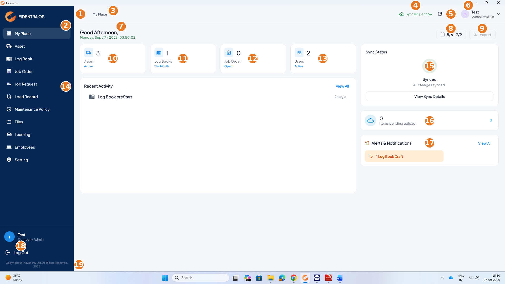
| # | Element | Description |
|---|---|---|
| 1 | Menu icon | Toggles/collapses the left navigation panel. |
| 2 | My Place (active) | Highlights the page currently open in the navigation panel. |
| 3 | Page title | Shows the name of the current screen ("My Place"). |
| 4 | Sync status | Shows whether the app is synced ("Synced just now"), with a manual refresh icon beside it. |
| 5 | Notifications | Bell icon for system notifications. |
| 6 | User account | Signed-in user's name and role, with a drop-down for account options. |
| 7 | Greeting & date/time | Personalised greeting with the current day, date, and time. |
| 8 | Date range | Selects the period the dashboard's figures are calculated over. |
| 9 | Export | Exports the dashboard's data for the selected period. |
| 10 | Asset card | Total active assets. |
| 11 | Log Books card | Log books created in the current period. |
| 12 | Job Order card | Open job orders. |
| 13 | Users card | Active users. |
| 14 | Recent Activity | Feed of recent actions, with a link to view the full history. |
| 15 | Sync Status panel | Confirms all changes are synced, with a details button. |
| 16 | Items pending upload | Count of items still queued to sync. |
| 17 | Alerts & Notifications | Outstanding items needing attention (e.g. a draft log book). |
| 18 | Account / Log Out | Signed-in user shown at the bottom of the sidebar, with Log Out below it. |
| 19 | Copyright footer | Publisher and copyright notice. |
Dashboard Components
Asset Card
Displays the total number of active assets available in the system.
Log Books Card
Displays the total log book entries created in the current period.
Job Order Card
Shows the number of open job orders requiring attention.
Users Card
Shows the total number of active users registered in the application.
Recent Activity
Displays the latest actions performed in the system, such as log book entries.
Sync Status
Indicates whether application data has been successfully synchronized with the server, and how many items are still pending upload.
Alerts & Notifications
Lists items that need attention, such as an unfinished log book draft.
Export
Lets users export the dashboard's data, for the selected date range, for reporting and record-keeping.
Dashboard Navigation
Login → My Place → Select Required Module → Asset / Log Book / Job Order / Job Request / Load Record / Fatigue / Maintenance Policy / Files / Learning / User / Setting → View Information → Perform Required Action
Dashboard Features
- Displays all key information on a single screen.
- Provides a quick overview of system activity.
- Shows Asset, Log Books, Job Order, and Users counts.
- Displays Recent Activity and Sync Status.
- Supports data export.
- Surfaces outstanding items via Alerts & Notifications.
- Provides easy access to all other modules.
Rules & Regulations
- Access My Place only with authorized login credentials.
- Do not modify or delete system data without permission.
- Ensure all information entered elsewhere in the system is accurate and complete.
- Allow the application to sync regularly to keep dashboard figures up to date.
- Do not share user credentials with others.
- Follow your organization's data security and confidentiality policies.
- Log out after completing your work to protect system access.
Benefits & Advantages
Quick overview Saves time Easy to navigate Faster decisions Real-time updates Quick module accessDashboard — KPI & Troubleshooting
Key figures shown on My Place, and what to do if something looks wrong.
Dashboard KPI Summary
| KPI | Description | Purpose |
|---|---|---|
| Asset | Total active assets in the system. | Monitor asset availability. |
| Log Books | Log books created in the current period. | Track log book activity. |
| Job Order | Open job orders. | Track outstanding maintenance tasks. |
| Users | Active users. | Monitor user activity. |
| Recent Activity | Latest actions performed in the system. | Track recent updates. |
| Sync Status | Whether data is synchronized, and items pending upload. | Ensure data is up to date. |
| Alerts & Notifications | Items needing attention (e.g. drafts). | Prompt timely follow-up. |
Error Handling and Troubleshooting
| Issue | Solution |
|---|---|
| Login failed | Check username and password. |
| Dashboard figures look out of date | Wait for auto-sync, or use the manual refresh icon next to the sync status. |
| Dashboard not loading | Refresh the application. |
| Export failed | Check your internet connection and try again. |
| Items stuck pending upload | Confirm an internet connection is available, then allow sync to complete. |
Asset — Groups & Asset Creation
Create the asset-group hierarchy, then create assets under the right group.
| Module | Asset |
| Main Screen | Asset Register |
| Primary Purpose | Create, organise, view and maintain fleet asset records. |
| Training Outcome | User can create an asset group, create an asset, open Asset Details and understand each related tab. |
Training Objective
- Create the asset-group hierarchy using Tree View.
- Create an asset and enter its identification, vehicle and business information.
- Find the created asset in the Asset Register.
- Open Asset Details and understand each tab.
- Understand how related records from other modules appear against the asset.
Overall Asset Process Flow
- Create Asset Group — define the parent/child grouping.
- Create Asset — select group and enter asset details.
- Asset Register — verify the new asset in Tree View / list.
- Open Asset Details — select View to open the asset.
- Review Related Tabs — checklist, jobs, logbooks, requests, documents, readings and maintenance.
Step 1 — Create an Asset Group
Asset Groups organise assets into a logical hierarchy. The Asset Register uses Tree View to display these groups and their child groups, making it easier to classify and locate assets.
- Select Asset → Asset Register.
- In the Asset Groups panel, select Add Group.
- Enter the Group Name.
- Enter a short Description, if required.
- Select Create.
- The new group becomes available in the Asset Groups Tree View.
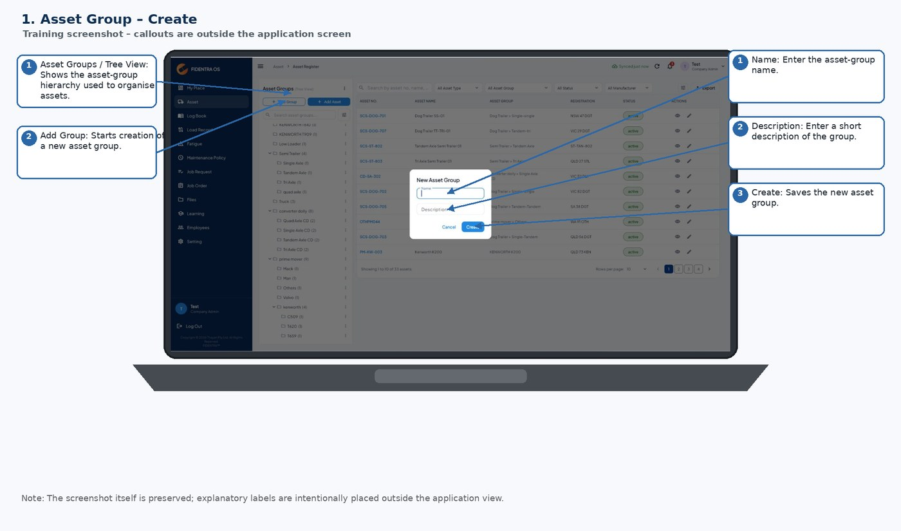
Step 2 — Create an Asset
After the required group is available, create the asset under the appropriate group. The New Asset form captures the asset's identity, registration, technical information, vehicle configuration and business information.
- Select Add Asset from the Asset Register.
- Select the Asset Group.
- Enter Asset Name and Asset No. as required.
- Enter registration/fleet information and vehicle identification details.
- Enter make, model, year and engine number where applicable.
- Enter VIN/Chassis Number, GCM, GVM, odometer and tare weight.
- Select Vehicle Type and then the relevant Axle Group.
- Set Status and complete description, department, customer and contractor where applicable.
- Select Create to save the asset.
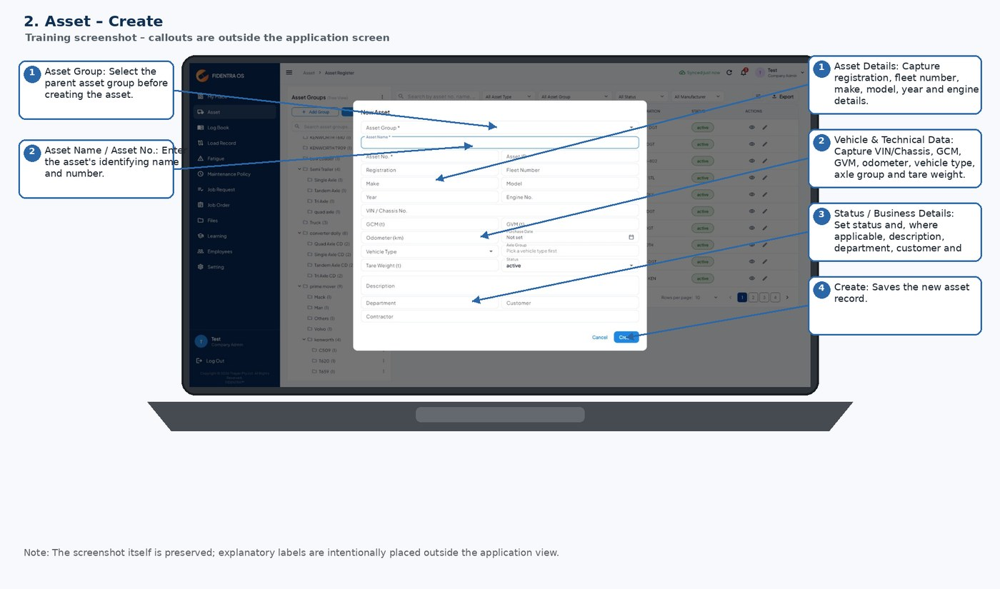
Asset — Asset Register & Tree View
Find, filter and open the assets that have been created.
Step 3 — Asset Register and Tree View
Once the asset is created, it is available in the Asset Register. The left side is the Asset Groups Tree View, while the right side contains the asset list. The user can expand groups to see child classifications and use search/filter controls to locate a specific asset.
- Tree View — displays parent and child asset groups.
- Asset list — displays Asset No., Asset Name, Asset Group, Registration and Status.
- Search and filters — narrow the list using asset name/number, type, group, status or manufacturer.
- View (eye icon) — opens Asset Details.
- Edit (pencil icon) — opens the asset for permitted changes.
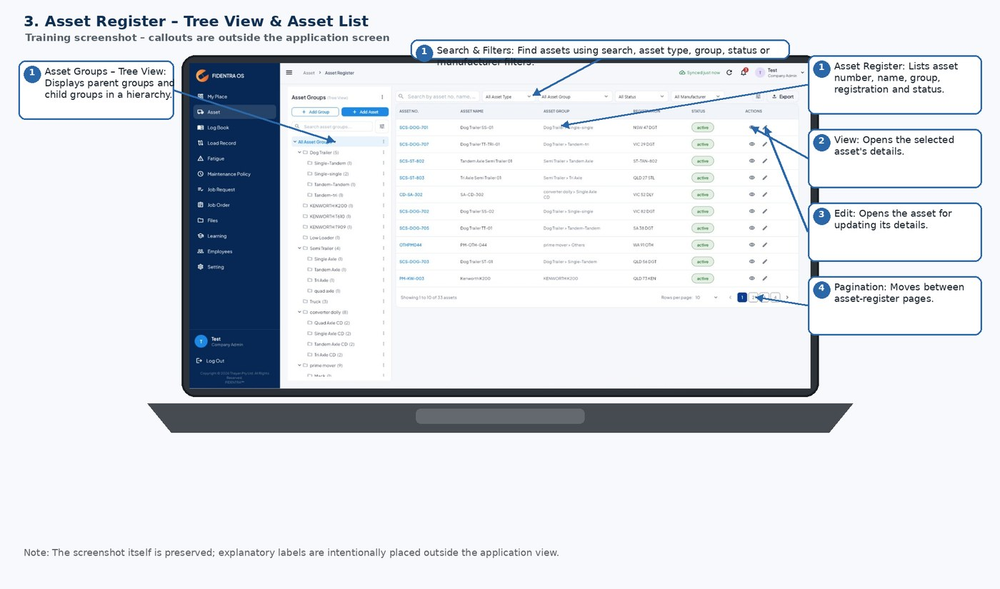
Asset Details — Overview
The main summary page for a selected asset.
Step 4 — Asset Details: Overview
Selecting View opens Asset Details. The Overview tab is the main summary page. It combines general information about the asset with its vehicle configuration.
- General Information — identity, registration, fleet number, make/model, year, VIN, weights, odometer, status and business information.
- Vehicle Configuration — vehicle type, axle group, vehicle image and axle-group characteristics.
- Edit controls — used by authorised users to update supported information.
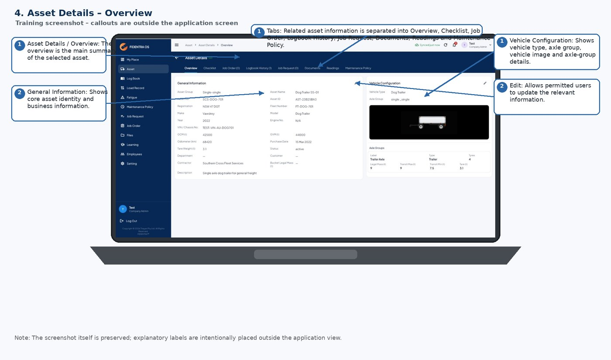
Asset Details — Related Tabs
Where each tab's information comes from, and what it shows for the asset.
The Asset Details page acts as a consolidated view for the selected asset. Related information is shown in separate tabs. The records are generated or maintained in their respective modules and, when linked to the selected asset, become visible here.
| Asset Details Tab | Source / Origin | What appears for the asset |
|---|---|---|
| Overview | Asset module | Core asset information and vehicle configuration. |
| Checklist | Settings → Checklist templates | The checklist configured in Settings can be associated with the asset and displayed here. |
| Job Order | Job Order module | Job orders created/managed for the asset are reflected here. |
| Logbook History | Log Book module | Log books recorded against the asset are reflected here. |
| Job Request | Job Request module | Requests created for the asset are reflected here. |
| Documents | Asset / Documents area | Documents uploaded/attached to the asset are listed here. |
| Readings | Asset Readings | Readings created for the selected asset are shown here. |
| Maintenance Policy | Maintenance Policy module | A maintenance policy assigned to the asset is available here for asset-specific maintenance tracking. |
Checklist — Asset Safety Checks
The Checklist tab shows the checklist assigned to the asset. In the supplied screen, both Pre-Start and Post-Trip checklists are displayed. Checklist templates are configured in Settings and the relevant checklist can then be associated with the asset.
- Pre-Start — safety checks before operation, such as engine oil, coolant, tyres, brakes and lights/indicators.
- Post-Trip — checks after operation, such as vehicle damage, fuel, tyres, warning lights and faults.
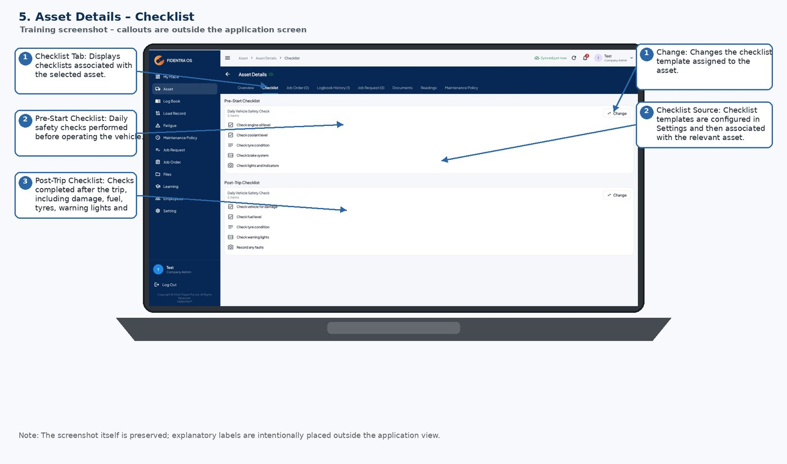
Job Order — Asset Work Orders
The Job Order tab provides the asset-level history of work orders. Status tabs allow the user to focus on specific stages. Job orders originate in the Job Order module and are linked to the relevant asset.
- All — displays all linked job orders.
- Assigned / In Progress — shows work at active stages when records exist.
- Completed — shows completed job orders.
- Cancelled — shows cancelled job orders.
Logbook History — Asset Log Books
The Logbook History tab shows log book records associated with the selected asset. Log books are created through the Log Book module; the asset's history provides a quick reference to submitted records.
- Date/time identifies when the log book record was recorded.
- Status such as Submitted indicates the current record state.
Job Request — Asset Requests
The Job Request tab shows requests associated with the asset. A request can be Open, Approved or Declined. Requests are created in the Job Request module and linked to the selected asset.
- Use the status tabs to filter the request list.
- Open requests require attention or further processing.
- Approved requests can progress to the relevant work process.
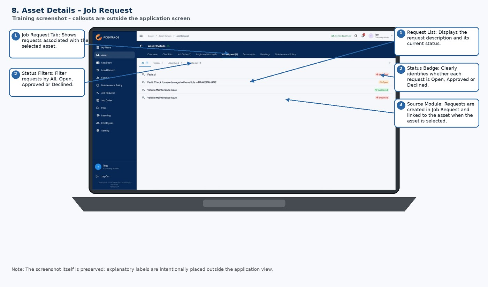
Documents — Asset Documents
The Documents tab provides asset-specific document storage and retrieval. When a document is uploaded and associated with the asset, it becomes visible in this list.
- Name — document/file name.
- Type — file type such as JPEG.
- Number and Validity — document metadata when provided.
- Size — stored file size.
- Actions — view/edit/download options according to permissions.
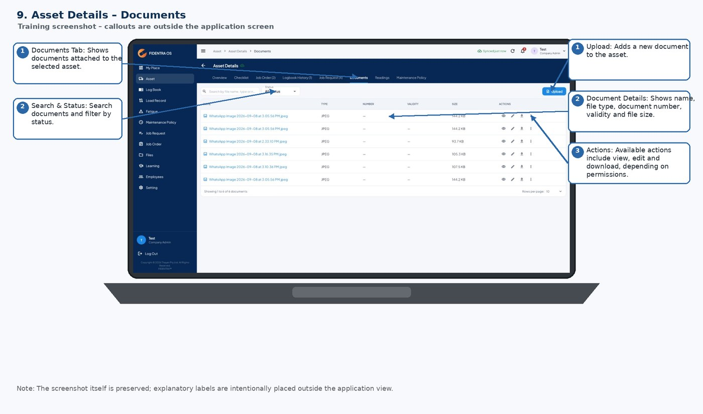
Readings — Asset Readings
The Readings tab records measurements or readings against the selected asset. The + button is used to create a new reading, and View Timeline provides the historical sequence of readings.
- Use readings to maintain an asset-specific history, such as odometer-related values.
- Each reading should be entered against the correct asset to preserve accurate maintenance/usage history.
Maintenance Policy — Asset-Level Assignment
Maintenance Policy is a separate module used to define maintenance rules or service intervals. When a maintenance policy is assigned to an asset, the applicable policy information becomes available in the asset's Maintenance Policy tab. This connects the asset to its maintenance schedule and supports tracking of service requirements.
- Create/configure the maintenance policy in the Maintenance Policy module.
- Select the applicable asset when assigning the policy.
- Open Asset Details → Maintenance Policy to review the asset-specific policy.
- Use the policy and asset readings/odometer information together when monitoring maintenance due requirements.
Asset — Relationships & Roles
How other modules connect to the asset, and who is typically responsible for what.
Module-to-Asset Relationship Diagram
The key concept for training: the Asset record is the central reference, while related operational information comes from the corresponding module or configuration area.
User / Person Responsibility Flow
For training, the workflow can be explained by role. The exact permissions depend on the user's configured access.
| Role | Typical Responsibility |
|---|---|
| Company Admin / Asset Admin | Creates groups, creates assets, maintains master/default data and controls access. |
| Operations / Fleet User | Reviews asset status, job requests, job orders, log books and operational history. |
| Driver / Field User | Creates or completes log book and checklist-related activities against the assigned asset. |
| Maintenance User | Reviews readings, maintenance policy, job requests and job orders for the asset. |
Asset — Training & Checklist
A recommended demonstration sequence, a completion checklist, and important notes.
Trainer Demonstration — Recommended Sequence
- Open Asset → Asset Register and explain the Asset Groups Tree View.
- Select Add Group and demonstrate entering Name and Description.
- Create the group and show where it appears in Tree View.
- Select Add Asset and explain each major field in the New Asset form.
- Create the asset and return to the Asset Register.
- Use the asset list to confirm Asset No., Asset Name, Group, Registration and Status.
- Select View and explain the Asset Details → Overview page.
- Move through each tab and explain where the related information originates.
- Demonstrate the checklist relationship with Settings.
- Demonstrate how Job Orders, Log Books and Job Requests created for the asset become visible under Asset Details.
- Upload/attach a document to the asset and show it under Documents.
- Create a reading and show it under Readings.
- Assign a Maintenance Policy and show the asset-specific policy under Maintenance Policy.
- Finish by explaining the full Asset relationship flow to the trainee.
Training Completion Checklist
| No. | Training Requirement | Status |
|---|---|---|
| 1 | Can create an Asset Group. | ☐ Not Checked |
| 2 | Understands Tree View and parent/child asset-group structure. | ☐ Not Checked |
| 3 | Can create an Asset under the correct group. | ☐ Not Checked |
| 4 | Can explain the main New Asset fields. | ☐ Not Checked |
| 5 | Can locate the asset in the Asset Register. | ☐ Not Checked |
| 6 | Can use View and Edit actions appropriately. | ☐ Not Checked |
| 7 | Can explain the Overview tab. | ☐ Not Checked |
| 8 | Can explain the Checklist tab and its Settings relationship. | ☐ Not Checked |
| 9 | Can explain Job Order and its source module. | ☐ Not Checked |
| 10 | Can explain Logbook History and its source module. | ☐ Not Checked |
| 11 | Can explain Job Request and its source module. | ☐ Not Checked |
| 12 | Can explain Documents and asset-specific attachments. | ☐ Not Checked |
| 13 | Can create/review Readings for the selected asset. | ☐ Not Checked |
| 14 | Understands Maintenance Policy assignment to an asset. | ☐ Not Checked |
Important Training Notes
- The example counts, names and statuses shown in screenshots represent the application state at the time the screenshots were captured.
- Use actual customer/company data for live training where appropriate.
- Do not include passwords, access tokens or confidential credentials in the training document.
- When reporting a defect, capture the screen and record steps, expected result, actual result, priority/severity and status.
- When troubleshooting synchronization, check the sync indicator and the record's latest state.
Log Book — Overview & Workflow
Create a driver's daily heavy-vehicle log book, submit it for review, and turn an approved one into a Load.
| Module | Log Book |
| Main Screen | Log Book list (left menu → Log Book) |
| Primary Purpose | Create and manage a driver's daily heavy-vehicle log book — from pre-trip vehicle checks through to post-trip checks, fatigue self-assessment and driver certification. |
| Covers | Navigating the Log Book list, creating a new Log Book, completing all Section, submission, review (approve / reject), and creating a Load from an approved Log Book. |
Overview
The Log Book module in FIDENTRA OS is used to create and manage a driver's daily heavy-vehicle log book — from pre-trip vehicle checks through to post-trip checks, fatigue self-assessment and driver certification. Once submitted, an office administrator reviews the Log Book and either Approves or Rejects it. An Approved Log Book can then be used to create a Load record for that trip.
This guide walks through the module in the same order a user works through it: opening the Log Book list, creating a new Log Book, completing each of its Section, submitting it, and finally reviewing / approving it.
Where to find it
The Log Book module is opened from the left-hand navigation menu:
- My Place
- Asset
- Log Book this module
- Load Record
- Fatigue
- Maintenance Policy
- Job Request / Job Order
- Files, Learning, User, Setting
Overall Workflow
The diagram below summarises the complete Log Book lifecycle, from creation to submission, review, and (for approved Log Books) creating a Load. Click any step to jump to its page.
What is in this module guide
| Group | Page | What it covers |
|---|---|---|
| Introduction | Main List Screen | The landing screen of the module: status tabs, filters, search and the table of every Log Book. |
| Introduction | Creating a New Log Book | Pick a vehicle group and vehicle, then start the Log Book. |
| Section | 1. Driver / Vehicle | Who is driving, for which customer, and which vehicle / trailer combination is being used. |
| Section | 2. Shift & Breaks | The driver's working hours and breaks, checked against fatigue-management rules. |
| Section | 3. Fitness for Work | A self-assessment declaration the driver completes before starting duty. |
| Section | 4. Pre-Start Check | A vehicle safety inspection completed before starting the trip. |
| Section | 5. Fault Report | Formally log any vehicle or equipment fault found during the trip. |
| Section | 6. Post-Trip Check | Mirrors the Pre-Start Check, completed once the trip is finished. |
| Section | 7. Certification | The driver certifies that everything entered is accurate, and signs on screen. |
| Review & approval | Draft Preview & Details | Check a Draft before submitting, and open the full detail view of any Log Book. |
| Review & approval | Submit, Approve & Reject | What an admin can do with a Submitted Log Book, and what happens to Approved and Rejected ones. |
| Review & approval | Create a Load & Asset Storage | Use an Approved Log Book to start a Load record, and find every Log Book stored against a vehicle. |
| Reference | Navigation Quick Reference | How to get to each screen and action in the module. |
Log Book — Main List Screen
The landing screen of the module: status tabs, filters, search and the table of every Log Book.
This is the landing screen of the module. It lists every Log Book created in the system and lets you filter, search, and jump into creating a new one.
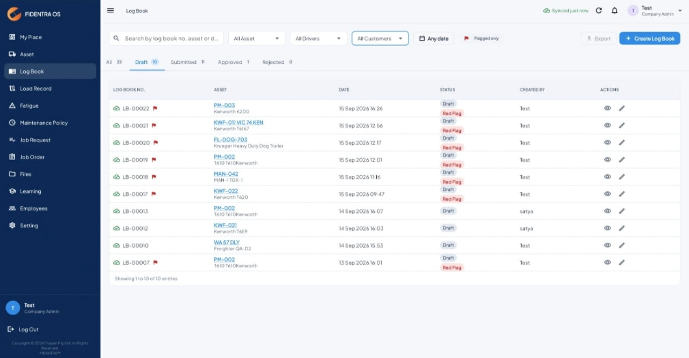
Status Tabs
Every Log Book sits in exactly one of four tabs, shown as a count next to the tab name:
| Tab | Meaning |
|---|---|
| All | Every Log Book regardless of status. |
| Draft | Log Book created but not yet submitted — can still be edited freely. |
| Submitted | Sent for review; awaiting Approve / Reject by an admin. |
| Approved | Reviewed and accepted; read-only, and a Load can be created from it. |
| Rejected | Sent back to the driver; must be corrected and resubmitted. |
Filters and Search Bar
Above the table is a row of filters used to narrow down the list:
| Control | What it does |
|---|---|
| Search box | Search by Log Book No., Asset or driver. |
| All Asset | Filter to a single vehicle / asset (dropdown lists every registered asset). |
| All Drivers | Filter to a single driver. |
| All Customers | Filter to a single customer / client company. |
| Any date | Opens a calendar to filter by a date or date range. |
| Flagged only | Show only Log Books with a Red Flag (e.g. a fatigue rule breach). |
| Export | Export the current filtered list. |
| Create Log Book | Blue button — starts a new Log Book (see Creating a New Log Book). |
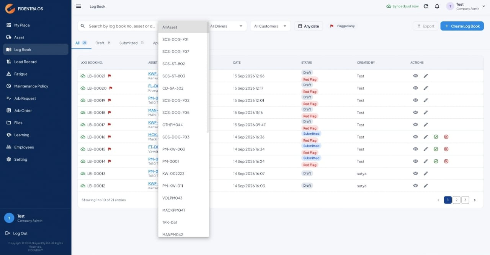
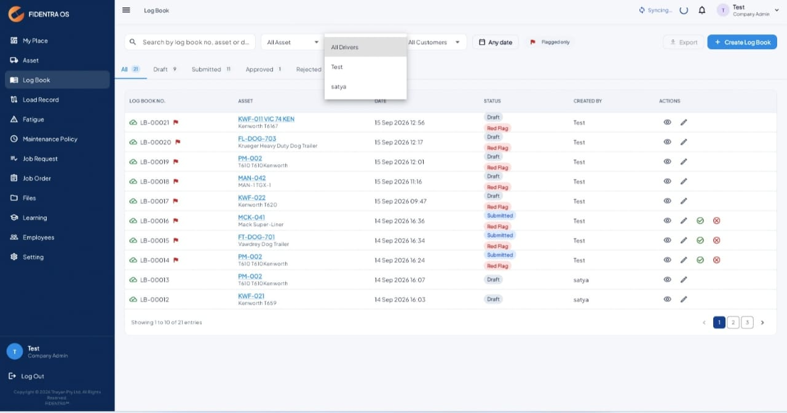
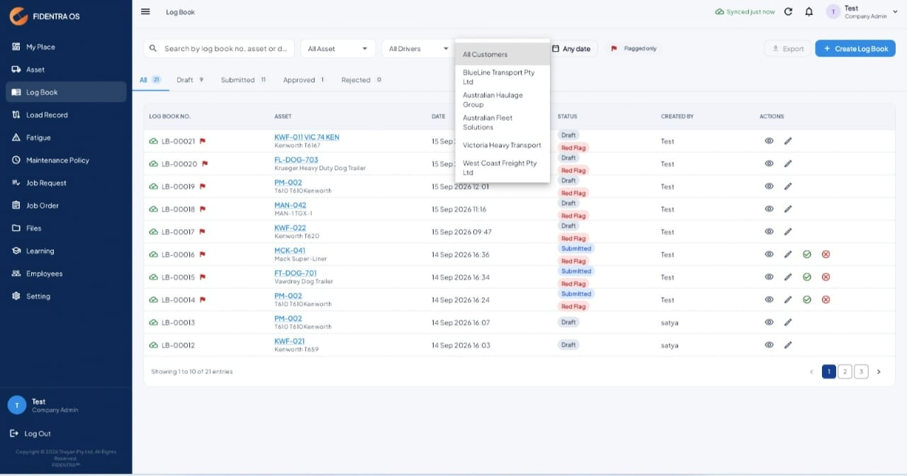
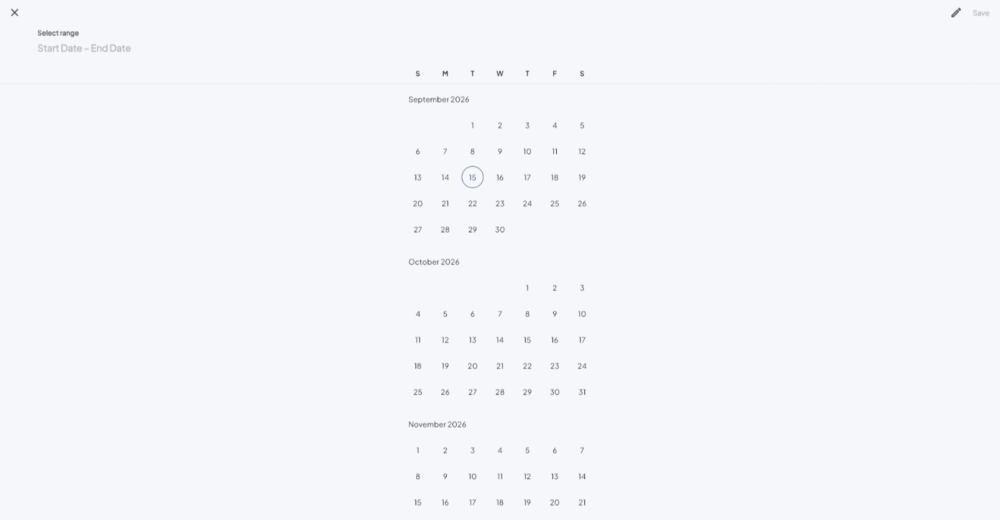
Table Columns
| Column | What it shows |
|---|---|
| Log Book No. | Unique reference, e.g. LB-00022. A red flag icon appears next to it if a fatigue rule was breached. |
| Asset | Vehicle / asset ID and description. |
| Date | Date and time the Log Book was created / last updated. |
| Status | Draft / Submitted / Approved / Rejected, plus a Red Flag badge if applicable. |
| Created By | The user who created the Log Book. |
| Actions | View (eye icon), Edit (pencil), and, for Submitted rows, Approve (green tick) / Reject (red cross). |
Log Book — Creating a New Log Book
Pick a vehicle group and vehicle, then start the Log Book.
Click the blue “Create Log Book” button on the main list screen.
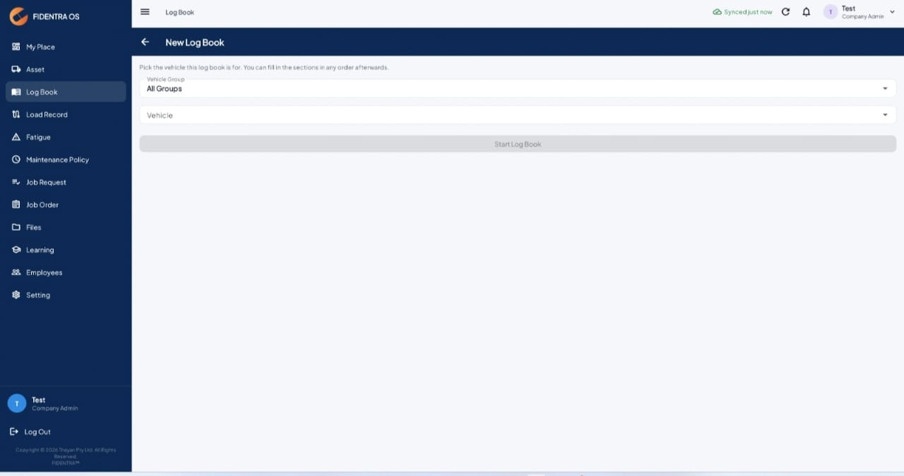
Click the “Vehicle Group” dropdown and pick the group the vehicle belongs to (e.g. Kenworth K200, Dog Trailer, Mack, Low Loader, etc.).
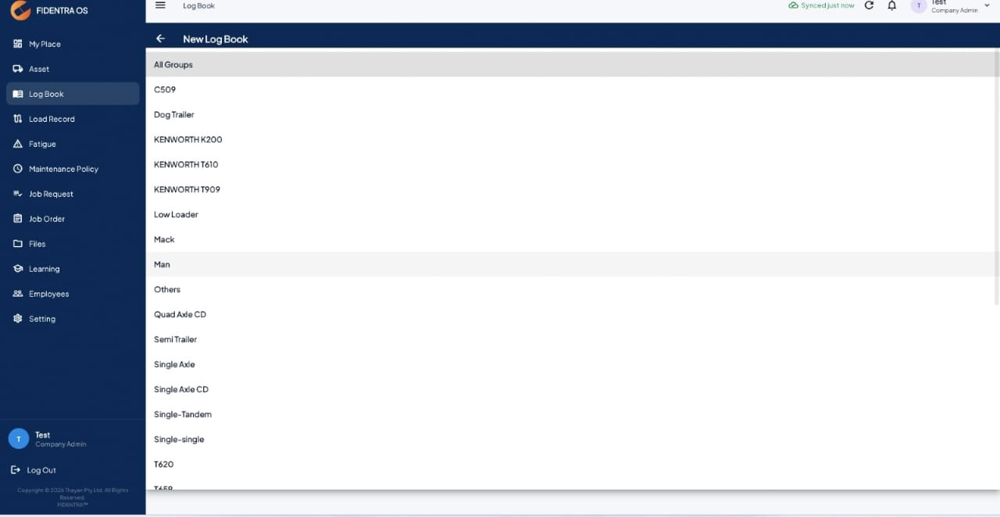
Select the specific “Vehicle” from that group. The “Start Log Book” button becomes active once both fields are set.
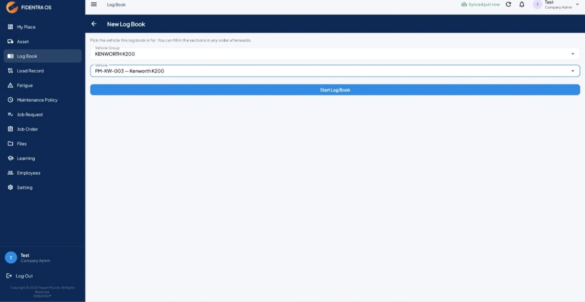
Click “Start Log Book”. The Log Book opens on the first of seven tabs: Driver / Vehicle.
Section 1 — Driver / Vehicle
Who is driving, for which customer, and which vehicle / trailer combination is being used.
Captures who is driving, for which customer, and which vehicle / trailer combination is being used.
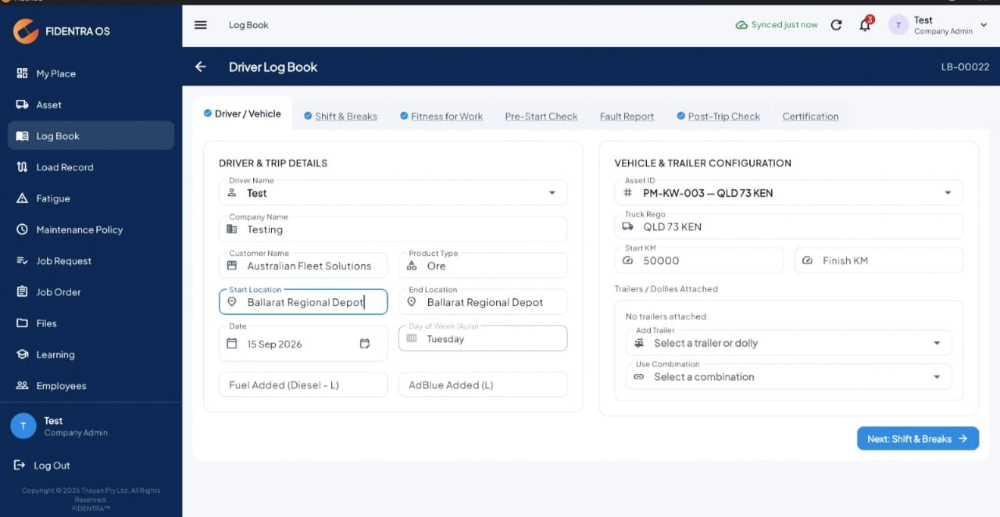
Driver & Trip Details
| Field | What to enter |
|---|---|
| Driver Name | The logged-in / assigned driver. |
| Company Name | The transport company operating the vehicle. |
| Customer Name | The customer the trip is being run for. |
| Product Type | What is being carried, e.g. Ore. |
| Start Location / End Location | Trip origin and destination. |
| Date / Day of Week | Trip date; day of week is auto calculated. |
| Fuel Added / AdBlue Added | Optional fuel (Diesel – L) and AdBlue (L) top-up quantities. |
Vehicle & Trailer Configuration
| Field | What to enter |
|---|---|
| Asset ID | The selected vehicle and its registration. |
| Truck Rego | Registration plate. |
| Start KM / Finish KM | Odometer readings at the start (and later, end) of the trip. |
| Trailers / Dollies Attached | Add a trailer or dolly (“Add Trailer”) or select a saved combination (“Use Combination”). |
Section 2 — Shift & Breaks
The driver's working hours and breaks, checked against fatigue-management rules.
Records the driver's working hours and breaks for fatigue-management compliance.
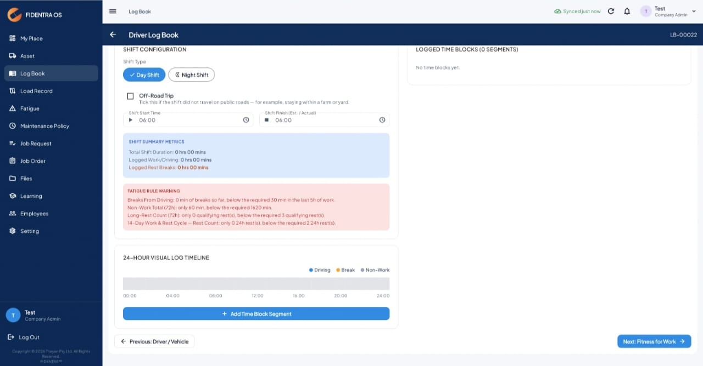
Shift Configuration
| Field | What to enter |
|---|---|
| Shift Type | Day Shift or Night Shift. |
| Off-Road Trip | Tick if the shift did not use public roads (e.g. stayed within a farm or yard). |
| Shift Start Time / Shift Finish Time | Estimated or actual shift boundaries. |
Adding Time Blocks
Click “+ Add Time Block Segment”.
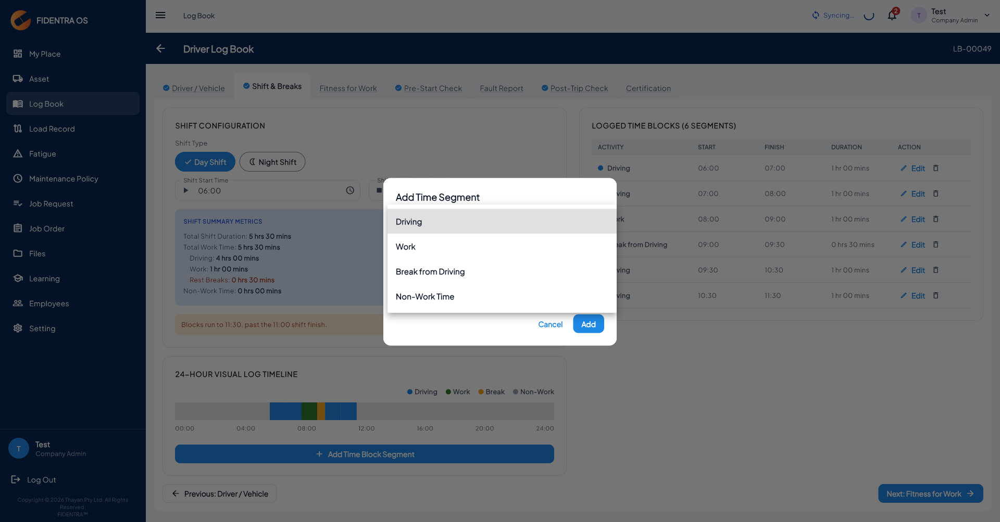
Choose the Type, set Start and Finish times, add an optional note, then click “Add”.
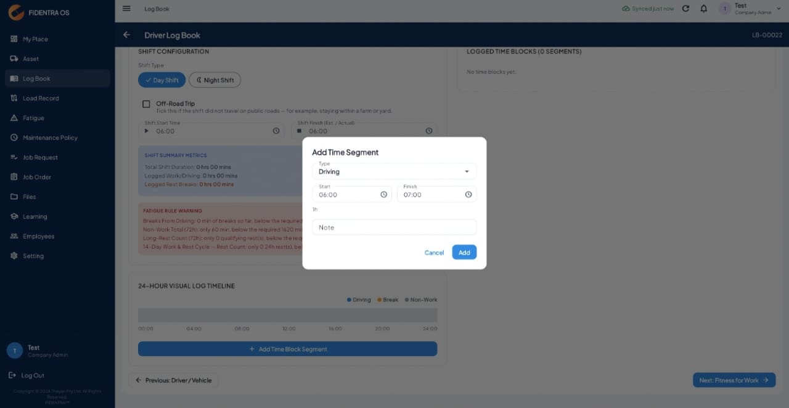
Repeat this for every driving, break, and non-work period in the shift. Each entry appears in the “Logged Time Blocks” table on the right and on the 24-hour visual timeline (Driving = blue, Break = orange, Non-Work = grey).
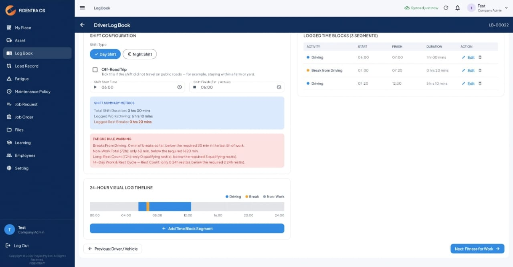
Example: logged time blocks in the screenshot above
| Activity | Start | Finish | Duration |
|---|---|---|---|
| Driving | 06:00 | 07:00 | 1 hr 00 mins |
| Break from Driving | 07:00 | 07:20 | 0 hrs 20 mins |
| Driving | 07:20 | 12:30 | 5 hrs 10 mins |
Shift Summary & Fatigue Rule Warning
As time blocks are added, FIDENTRA OS automatically calculates:
- Total Shift Duration
- Logged Work / Driving time
- Logged Rest Breaks
If the entries breach a fatigue rule (e.g. insufficient break time, insufficient rest in a 72-hour or 14-day window), a red “Fatigue Rule Warning” box lists exactly which rule(s) are not yet met. This is informational while editing, but a breach at submission time is what causes the Red Flag shown on the Log Book list.
- Total Shift Duration: 0 hrs 00 mins (Shift Start and Finish are both 06:00 in this example)
- Logged Work / Driving: 6 hrs 10 mins
- Logged Rest Breaks: 0 hrs 20 mins
- Breaks From Driving: 0 min of breaks so far, below the required 30 min in the last 5h of work.
- Non-Work Total (72h): only 60 min, below the required 1620 min.
- Long-Rest Count (72h): only 0 qualifying rest(s), below the required 3 qualifying rest(s).
- 14-Day Work & Rest Cycle — Rest Count: only 0 24h rest(s), below the required 2 24h rest(s).
Section 3 — Fitness for Work
A self-assessment declaration the driver completes before starting duty.
A self-assessment declaration the driver completes before starting duty.
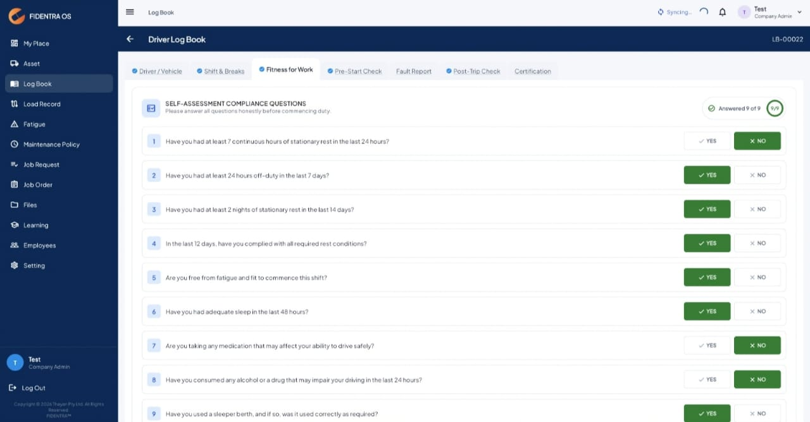
The driver answers Yes / No to nine compliance questions, covering rest hours, days off, fatigue, medication, alcohol/drugs, and correct sleeper-berth use. A progress indicator (e.g. “Answered 9 of 9”) confirms when the section is complete.
The nine questions
“Please answer all questions honestly before commencing duty.”
- Have you had at least 7 continuous hours of stationary rest in the last 24 hours?
- Have you had at least 24 hours off-duty in the last 7 days?
- Have you had at least 2 nights of stationary rest in the last 14 days?
- In the last 12 days, have you complied with all required rest conditions?
- Are you free from fatigue and fit to commence this shift?
- Have you had adequate sleep in the last 48 hours?
- Are you taking any medication that may affect your ability to drive safely?
- Have you consumed any alcohol or a drug that may impair your driving in the last 24 hours?
- Have you used a sleeper berth, and if so, was it used correctly as required?
Section 4 — Pre-Start Check
A vehicle safety inspection completed before starting the trip.
A vehicle safety inspection completed before starting the trip.
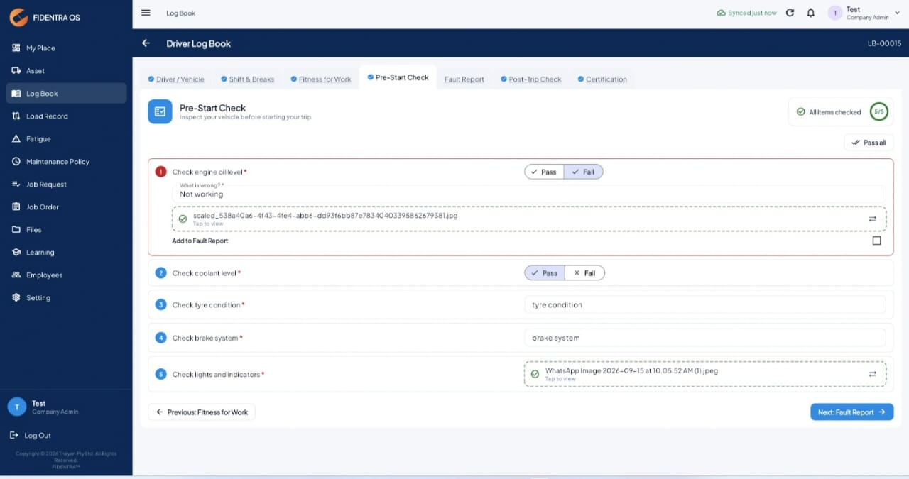
| Element | What it does |
|---|---|
| Checklist items | e.g. engine oil, coolant, tyre condition, brake system, lights and indicators — set as Pass / Fail or answered as free text depending on the item. |
| What is wrong? | Appears when an item is marked Fail — free text description of the defect. |
| Photo upload | Attach a photo as evidence for an item (green check confirms it uploaded). |
| Add to Fault Report | Tick to automatically carry a failed item into the Fault Report tab. |
| All Items Checked | Progress badge (e.g. 5 / 5) confirming every item has been answered. |
| Pass all | Shortcut to mark every remaining item as Pass. |
Checklist items in the screenshot above
- Check engine oil level
- Check coolant level
- Check tyre condition
- Check brake system
- Check lights and indicators
See also: Asset Details — Related Tabs shows the Pre-Start and Post-Trip checks for an asset.
Section 5 — Fault Report
Formally log any vehicle or equipment fault found during the trip.
Used to formally log any vehicle or equipment fault found during the trip.
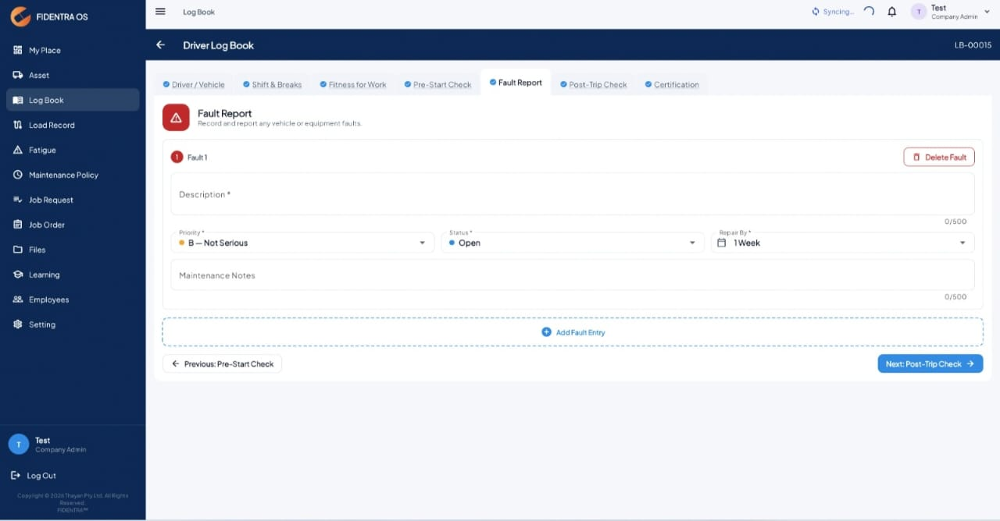
| Field | What to enter |
|---|---|
| Description | What is wrong with the vehicle / equipment. |
| Priority | e.g. “B — Not Serious”, used to set urgency of repair. |
| Status | Open / In Progress / Closed. |
| Repair By | Target timeframe for the repair, e.g. 1 Week. |
| Maintenance Notes | Free text notes for the maintenance team. |
| + Add Fault Entry | Add another fault if more than one was found. |
| Delete Fault | Remove a fault entry. |
If this section is empty, no faults are recorded and it can be skipped.
Section 6 — Post-Trip Check
Mirrors the Pre-Start Check, completed once the trip is finished.
Mirrors the Pre-Start Check but completed once the trip is finished.
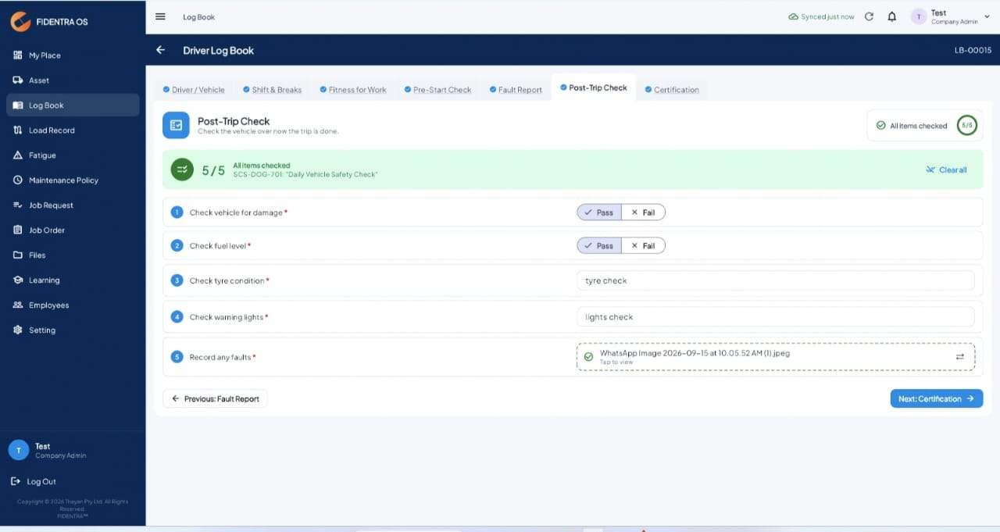
| Element | What it does |
|---|---|
| Check vehicle for damage / fuel level | Pass / Fail toggle. |
| Check tyre condition / warning lights | Free-text confirmation. |
| Record any faults | Attach a photo / file as supporting evidence. |
| All Items Checked | Progress badge, e.g. 5 / 5. |
Checklist items in the screenshot above
- Check vehicle for damage
- Check fuel level
- Check tyre condition
- Check warning lights
- Record any faults
Section 7 — Certification
The driver certifies that everything entered is accurate, and signs on screen.
The final step, where the driver certifies that everything entered is accurate.
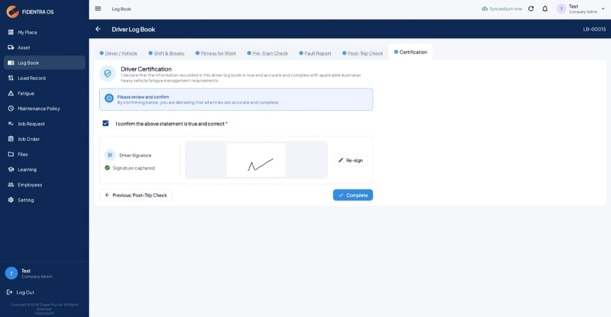
| Element | What it does |
|---|---|
| Declaration statement | Confirms the Log Book information is true, accurate and complies with Australian heavy-vehicle fatigue management requirements. |
| “I confirm the above statement...” checkbox | Must be ticked to proceed. |
| Driver Signature | Captured on-screen; “Re-sign” clears it and lets the driver sign again. |
| Complete | Finishes the Log Book. It remains in Draft until it is submitted from the list screen. |
Declaration wording on screen
“I declare that the information recorded in this driver log book is true and accurate and complies with applicable Australian heavy vehicle fatigue management requirements.”
Please review and confirm — by confirming below, you are declaring that all entries are accurate and complete.
☑ I confirm the above statement is true and correct *
Log Book — Draft Preview & Detail View
Check a Draft before submitting, and open the full detail view of any Log Book.
Reviewing a Draft Before Submitting
Opening a Draft Log Book from the list (eye icon) shows a read-only preview of everything entered so far, including the shift summary, Fitness for Work answers, and certification status.
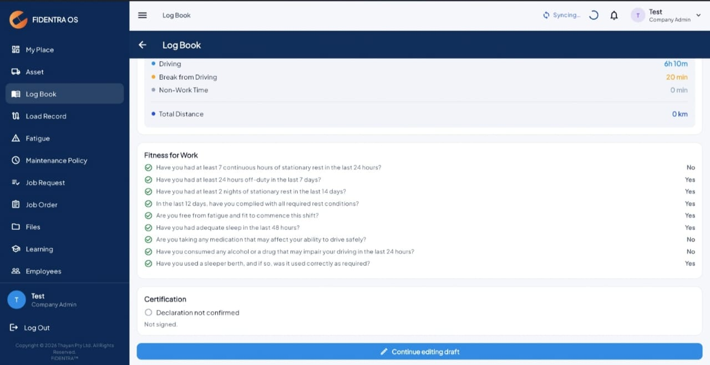
If the Certification step has not been completed, the preview shows “Declaration not confirmed / Not signed” and offers a “Continue editing draft” button to go back in and finish it.
Viewing Log Book Details
Clicking the eye (View) icon on any row opens the full detail view of that Log Book — useful for admins reviewing a Submitted entry, or for anyone checking a Log Book after the fact.
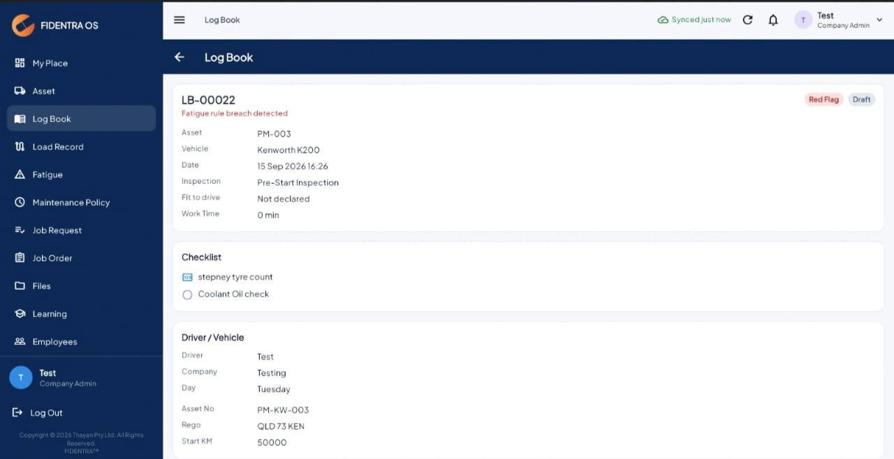
The header repeats the Log Book No., status badges (e.g. Red Flag, Draft / Submitted / Approved / Rejected), and key trip facts: Asset, Vehicle, Date, Inspection type, fit to drive, and Work Time. Below it, the Checklist and Driver / Vehicle details are shown read-only.
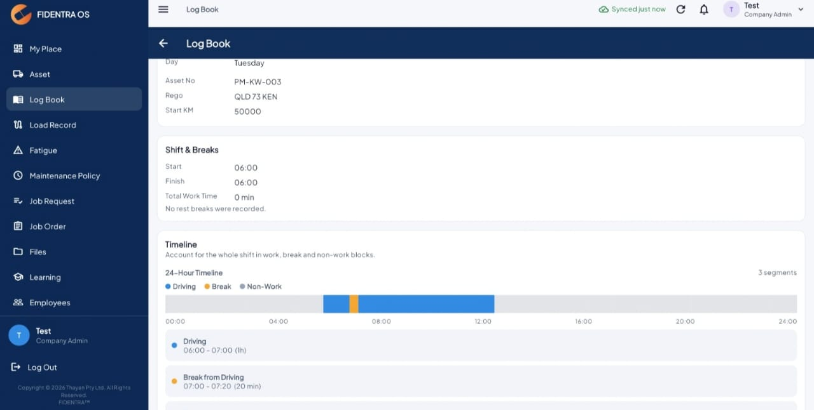
Scrolling down shows the Shift & Breaks summary (Start, Finish, Total Work Time) and the same 24-hour timeline used during data entry, plus a breakdown of every logged segment.
Log Book — Submitting and Reviewing
What an admin can do with a Submitted Log Book, and what happens to Approved and Rejected ones.
Once Certification is complete, the Log Book is submitted for review and moves to the Submitted tab.
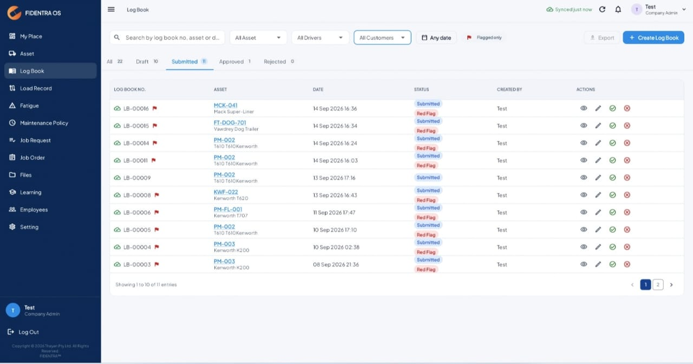
From the Submitted tab, an admin can:
- View (eye icon) — open the full read-only detail.
- Edit (pencil icon) — open the Log Book for correction.
- Approve (green tick) — accept the Log Book; it moves to the Approved tab.
- Reject (red cross) — send it back; it moves to the Rejected tab with a Red Flag.
Approved Log Books
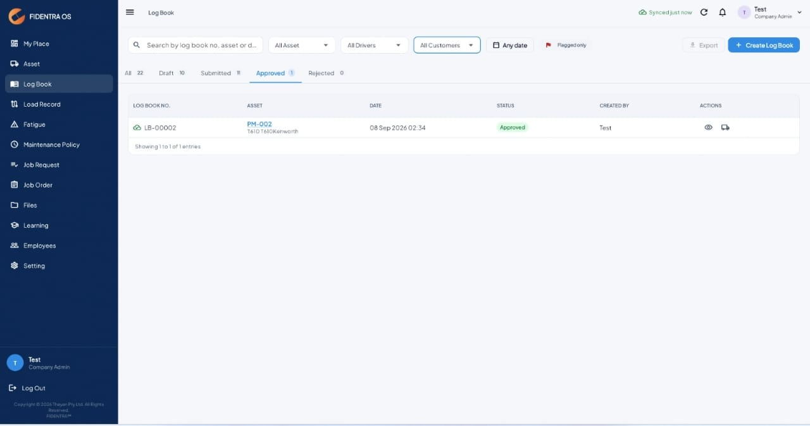
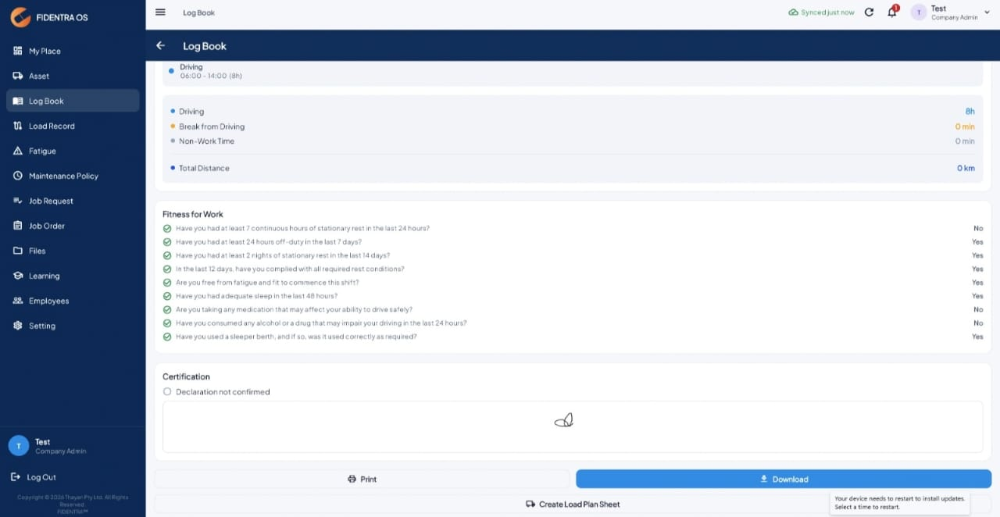
An Approved Log Book becomes read-only. From here it can be Printed, Downloaded, or used to “Create Load Plan Sheet” (see Creating a Load).
Rejected Log Books
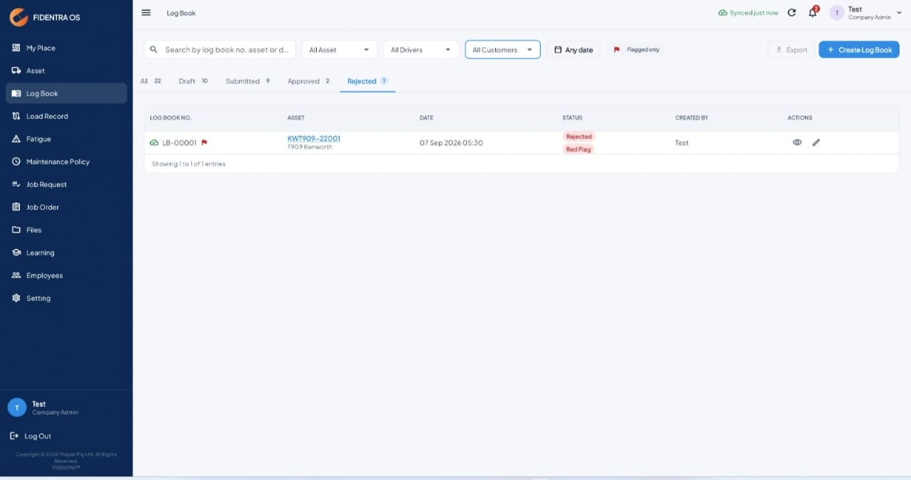
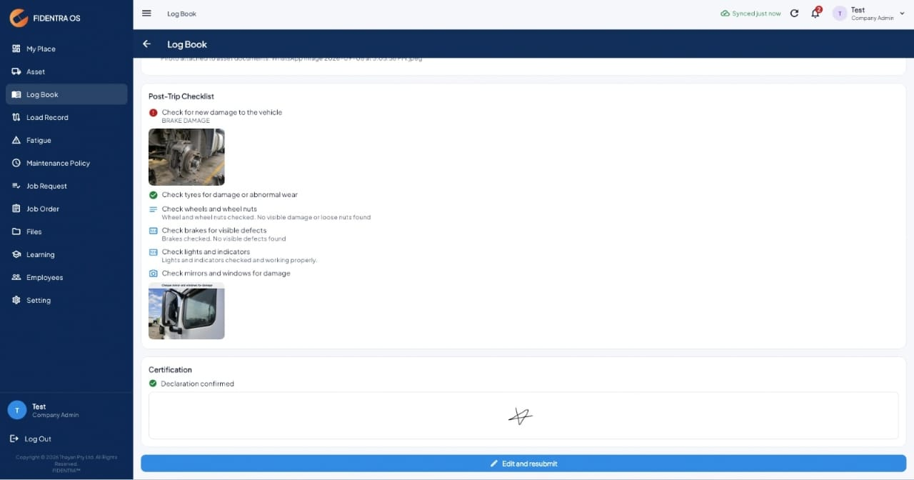
A Rejected Log Book can be reopened with “Edit and resubmit”. The driver corrects the flagged information, re-confirms the declaration, re-signs, and completes Certification again — after which it returns to the Submitted tab for another review.
Log Book — Creating a Load & Asset Storage
Use an Approved Log Book to start a Load record, and find every Log Book stored against a vehicle.
Creating a Load from an Approved Log Book
Once a Log Book is Approved, the truck icon in its Actions column (see Figure LB-24 on Submit, Approve & Reject) opens the Load Record module, pre-linked to that Log Book's vehicle and trip.
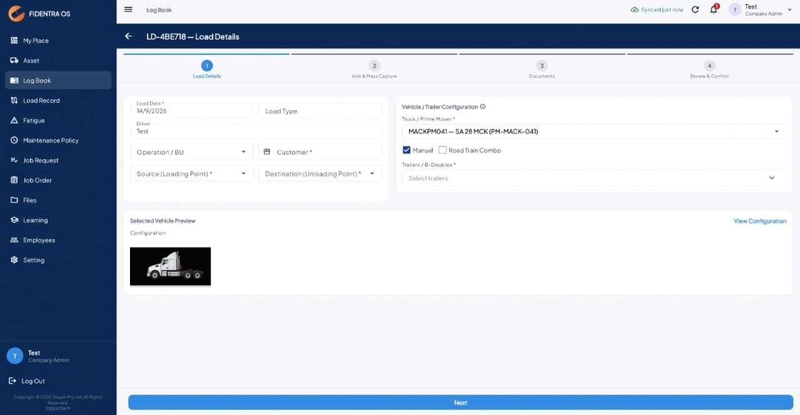
The Load Record is completed over four steps:
- Load Details — load date / type, driver, customer, source and destination, truck / prime mover and trailer configuration.
- Axle & Mass Capture
- Documents
- Review & Confirm
This Load is created specifically against the Log Book it was launched from, keeping the trip, vehicle configuration and load information linked together.
Log Books Stored Against an Asset
Every Log Book is associated with the vehicle / Asset selected when it was created. To see all Log Books for a specific vehicle, go to Asset in the left-hand menu, open the vehicle, and view its Log Book history from there — instead of filtering the main Log Book list by asset.
See also: Asset Details — Related Tabs (Logbook History).
Log Book — Navigation Quick Reference
How to get to each screen and action in the module.
| Screen / Action | How to get there |
|---|---|
| Log Book list | Left menu → Log Book |
| Filter by status | Log Book → tabs: All / Draft / Submitted / Approved / Rejected |
| Filter by asset / driver / customer / date / flag | Log Book → filter bar above the table |
| Create a new Log Book | Log Book → “Create Log Book” → Vehicle Group → Vehicle → “Start Log Book” |
| Fill in the 7 sections | Log Book (open) → tabs: Driver / Vehicle, Shift & Breaks, Fitness for Work, Pre-Start Check, Fault Report, Post-Trip Check, Certification |
| Submit a Log Book | Complete Certification → Complete (from the list, status becomes Submitted) |
| View details | Log Book list → eye icon on any row |
| Edit a Draft / Rejected Log Book | Log Book list → pencil icon |
| Approve / Reject | Submitted tab → green tick / red cross |
| Create a Load | Approved tab → truck / Load icon → Load Record (4 steps) |
| View Log Books for one vehicle | Left menu → Asset → select vehicle → Log Book history |
End of the Log Book training guide.
Fatigue Management Module
Practical day-to-day training for scheme configuration, driver logbook activity, fatigue warning evaluation and breach review.
Roles & Permissions
Who can view, configure, drive, review and approve.
| Capability | Company Admin | Driver | Mechanic | Master Admin |
|---|---|---|---|---|
| View Fatigue / Active Breaches | Yes | Own only | Yes | No company scope |
| See Reviews / perform review | Yes | No | No | No in role table |
| View Fatigue Rules | Yes | Read-only | Read-only | No in role table |
| Create / edit / activate / delete / default scheme | Yes | No | No | No in role table |
| Fill own Shift & Breaks / Fitness for Work | N/A | Yes | N/A | N/A |
| Approve / reject submitted logbook | Yes | No | No | No in role table |
Create, Activate & Assign a Fatigue Scheme
| Step | Action | Expected result |
|---|---|---|
| 1 | Settings → Fatigue Rules | Scheme list opens. |
| 2 | Select New Scheme | Editor opens in create mode. |
| 3 | Enter a scheme name and configure settings | Blank name cannot be saved. |
| 4 | Save | New scheme is created as Inactive. |
| 5 | Row menu → Make Active | Status becomes Active. |
| 6 | Optional: Set as Default | Used when a driver has no active direct assignment. |
| 7 | Users → driver → Edit → Fatigue Scheme | Select scheme and enter Scheme Start Date. |
Scheme Details
Start at Settings → Fatigue Rules → New Scheme → Details. Use the left-hand section menu to move through the policy.
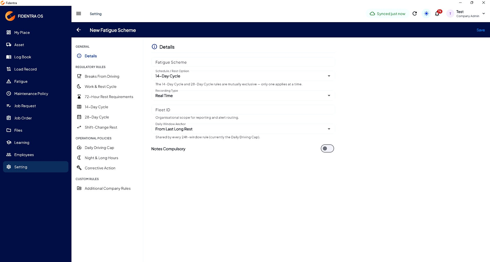
| Field / Control | Meaning / Training guidance |
|---|---|
| Fatigue Scheme | Name of the scheme. Use a clear business name for assignment and reporting. |
| Schedule / Rest Option | Select either 14-Day Cycle or 28-Day Cycle. Only one is binding at a time. |
| Recording Type | Real Time or Retrospective. |
| Fleet ID | Organisational scope for reporting and alert routing where used. |
| Daily Window Anchor | Controls how 24-hour window rules are anchored. |
| Notes Compulsory | Enable when the organisation requires notes as part of the record. |
Regulatory Rules
Breaks From Driving
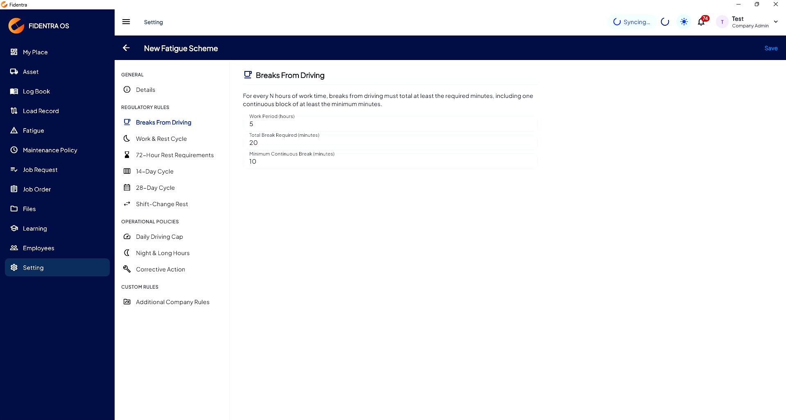
The supplied configuration shows a 5-hour work period, 20 minutes total break, including at least one continuous 10-minute break.
Work & Rest Cycle
The supplied screen shows 7 hours minimum continuous rest and 17 hours maximum between qualifying rests.
72-Hour Rest Requirements
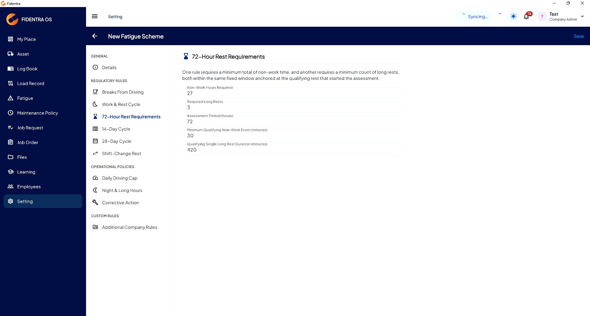
| Control | Supplied value |
|---|---|
| Non-Work Hours Required | 27 hours |
| Required Long Rests | 3 |
| Assessment Period | 72 hours |
| Minimum Qualifying Non-Work Event | 30 minutes |
| Qualifying Single Long Rest Duration | 420 minutes / 7 hours |
Choose the Binding Cycle: 14-Day or 28-Day
The Schedule / Rest Option on Details determines which cycle is binding. The other cycle can remain configured for later use.
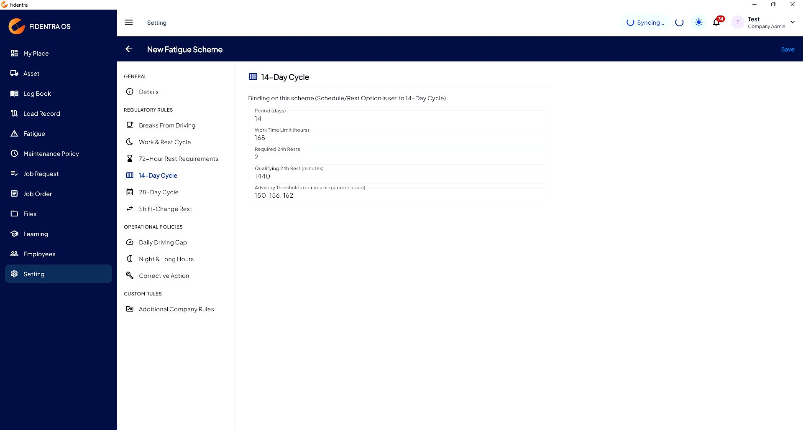
| Cycle | Source guide summary |
|---|---|
| 14-Day Cycle | 14-day assessment period; 168-hour work limit; 2 required 24-hour rests; advisory thresholds 150 / 156 / 162 hours. |
| 28-Day Cycle | 28-day assessment period; 144-hour work limit per 14-day sub-window; 4 qualifying 24-hour rests. |
Shift-Change Rest
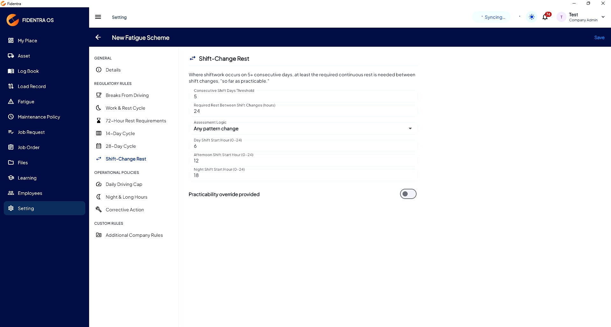
The supplied screen uses a 5-day threshold and requires 24 hours rest between shift changes. An optional practicability override can be recorded when enabled.
Operational Policies
Daily Driving Cap
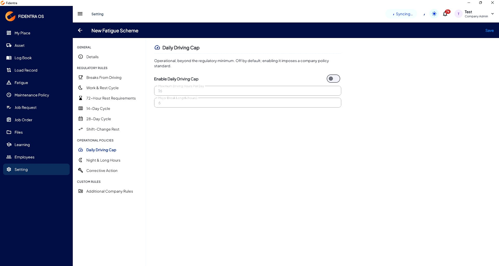
Operational cap. The guide's defaults are 16 hours per day and a 6-hour major break; this control is off by default.
Night & Long Hours
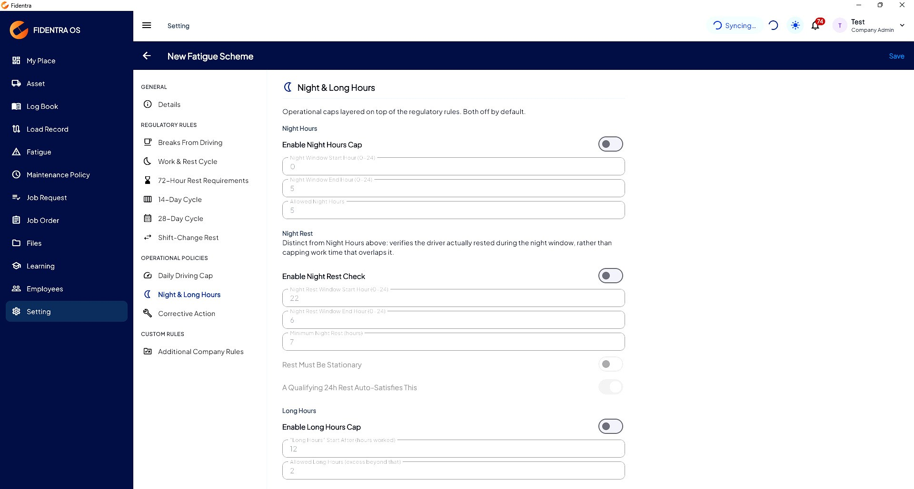
| Control | Supplied defaults / engine scope |
|---|---|
| Night Hours Cap | 00:00–05:00; 5 hours allowed. Backend-only; off by default. |
| Night Rest Check | 22:00–06:00; minimum 7 hours rest. Backend-only; off by default. |
| Long Hours Cap | Starts after 12 hours worked; 2 hours excess allowed. Evaluated by the on-device warning engine; off by default. |
Corrective Action Defaults
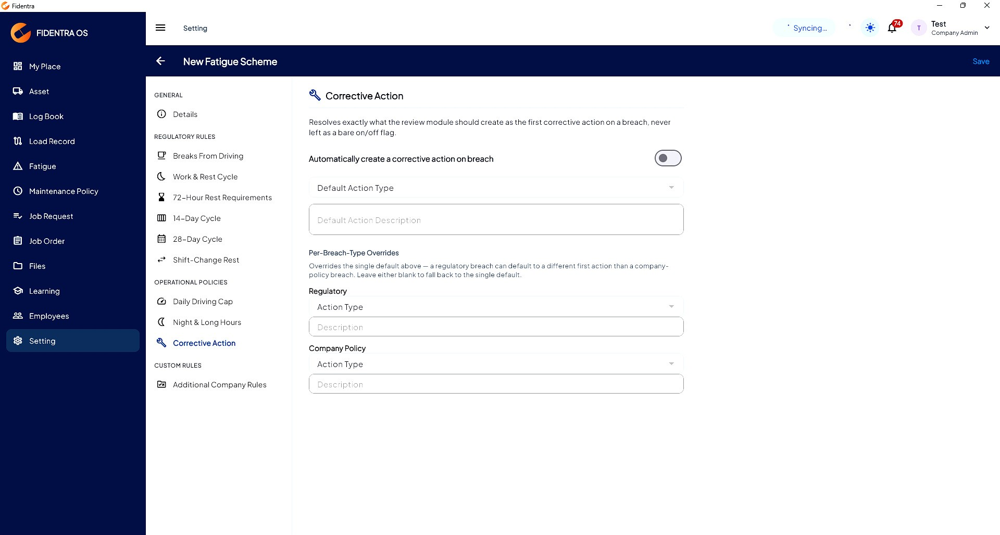
This page controls whether the system automatically creates a first corrective action when a breach occurs.
- Enable Automatically create a corrective action on breach when required.
- Choose the Default Action Type and enter a useful description.
- Optionally configure a different action for Regulatory breaches.
- Optionally configure a different action for Company Policy breaches.
- Leave an override blank when it should fall back to the default action.
Additional Company Rules
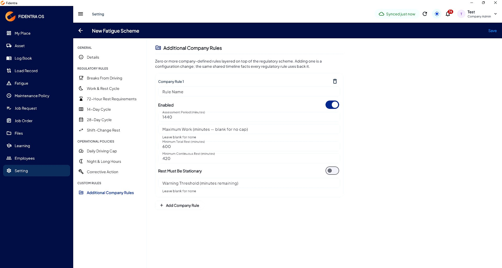
Additional Company Rules allow company-defined controls to be layered over the regulatory scheme.
| Field | Training guidance |
|---|---|
| Rule Name | Use a human-readable policy name, e.g. Yard Shunting Max Hours. |
| Enabled | Turns the custom rule on/off. |
| Assessment Period | Window used to assess the rule; supplied default 1440 minutes. |
| Maximum Work | Optional; may be blank for no cap. |
| Minimum Total Rest | Supplied default 600 minutes. |
| Minimum Continuous Rest | Supplied default 420 minutes. |
| Rest Must Be Stationary | Enable only when company policy requires stationary rest. |
| Warning Threshold | Optional advance-warning threshold; may be blank. |
Driver Daily Workflow
Shift & Breaks
- Record Driving, Break From Driving, Non-Work and Work time blocks.
- Overlapping segments are flagged as issues.
- Gaps are shown as warnings but are not necessarily blocking.
- Totals, timeline and fatigue warnings recalculate after edits or deletion.
Fitness for Work
- Questions come from the company template, or the standard NHVR set if no custom template exists.
- Mark all chooses each question's non-risky answer; it does not simply answer Yes.
- A risky answer is highlighted and requires I acknowledge – continue anyway.
- Changing an answer clears an earlier acknowledgement.
- Submitted / approved logbooks are read-only.
Understanding Fatigue Warnings
The device evaluates the assigned active scheme, or the company Default scheme when no active direct assignment can be used. The backend independently re-checks and is authoritative for BreachEvent records.
| Where warning appears | What the user sees |
|---|---|
| Dashboard Duty Card | Live warning while an active segment is running; refreshes on a roughly 30-second ticker. |
| Shift & Breaks | Work-hours-limit red flag in the metrics area. |
| Submit-time dialog | After submission, current fatigue warnings may be listed in a Fatigue rule warning dialog. |
| Active Breaches / Reviews | Backend-authoritative breach events and formal review workflow. |
| Rule | On-device? | Training summary |
|---|---|---|
| F01 Breaks From Driving | Yes | Required break in work period. |
| F02/F04 Long-Rest Separation | Yes | Qualifying rest and maximum gap. |
| F03A/B 72-Hour Rest | Yes | Total non-work and long-rest count. |
| F05 14-Day Cycle | Yes | Work cap and 24-hour rests. |
| F07 28-Day Cycle | Yes | Sub-window cap and 24-hour rests. |
| F08 Shift-Change Rest | No | Backend only. |
| Daily Driving Cap | Yes | Operational cap. |
| Night Hours / Night Rest | No | Backend only. |
| Long Hours Cap | Yes | Operational cap. |
Breach Review Workflow
Active Breaches and Reviews are separate records. Active Breaches shows the read-only BreachEvent; Reviews contains the linked investigation record.
Review Queue
- Default filter is Open (not closed).
- Filters: New, Under Review, Action Recorded, Monitoring, Closed.
- An unassigned review shows Unassigned – Claim.
| Area | What to do |
|---|---|
| Evidence | Review evaluation rows, actual vs required values, forecast where available, severity and override details. |
| Driver Timeline | Check driving, break, non-work and work events; unconfirmed events are highlighted. |
| Corrective Actions | Add action, assign it and set due date. Completion needs a note; cancellation needs a reason. |
| Comments | Comment and optionally apply an action tag. Blank comments are blocked. |
| Close While Active | Exceptional path; record override reason and resolution outcome. |
| Reopen | Closed reviews can be reopened with a reason. |
Offline & Sync Behaviour
Fatigue schemes are cached locally, so rules and supported on-device checks can continue offline. An offline-created scheme receives a local ID first; the backend server ID appears after sync.
| Situation | Expected behaviour |
|---|---|
| Create scheme offline | Scheme appears locally; server ID is not yet available. |
| Reconnect and revisit Fatigue Rules | Remote changes are pulled; scheme syncs and server ID becomes available. |
| Assign unsynced offline-created scheme | Application should show a clear error instead of using a non-existent backend ID. |
| Remote pull fails | Cached schemes remain available; list should not crash or become blank. |
| Driver edits logbook offline | Supported fatigue checks use local driver, scheme and recent logbooks and should compute as online. |
Quick Rule Reference
| Code | Plain-language rule | Default / key values in the training guide |
|---|---|---|
| F01 | Breaks From Driving | 5h work period; 20min total break; 10min continuous break. |
| F02/F04 | Long-Rest Separation | 7h minimum continuous rest; 17h maximum gap. |
| F03A | Non-Work Total (72h) | 27h non-work in 72h. |
| F03B | Long-Rest Count (72h) | 3 long rests of at least 420min in 72h. |
| F05 | 14-Day Work & Rest Cycle | 168h work limit; 2 qualifying 24h rests; advisory 150/156/162h. |
| F07 | 28-Day Work & Rest Cycle | 144h per 14-day sub-window; 4 qualifying 24h rests. |
| F08 | Shift-Change Rest | 5 consecutive shift-day threshold; 24h required rest. |
| Daily Driving Cap | Operational | 16h/day and 6h major break; off by default. |
| Night Hours | Operational | 00:00–05:00; 5h allowed; off by default. |
| Night Rest | Operational | 22:00–06:00; 7h minimum rest; off by default. |
| Long Hours | Operational | Starts after 12h worked; 2h allowed excess; off by default. |
Practical Training Scenarios
Scenario A — Admin creates a scheme
| Trainer asks learner to… | Success check |
|---|---|
| Create “Training Scheme” in Settings → Fatigue Rules. | Scheme saves as Inactive. |
| Activate and set Default. | Status shows Active / Default. |
| Enable Daily Driving Cap and set a test-friendly value. | Setting persists after save/reopen. |
| Assign to a driver with Scheme Start Date. | Assignment saves successfully. |
Scenario B — Driver completes a shift
| Trainer asks learner to… | Success check |
|---|---|
| Start Driving and select a vehicle. | Duty Card shows Driving. |
| Take a break, then resume. | Duty Card changes state correctly. |
| Finish Driving. | Segment closes; Complete Log Book is available. |
| Review Shift & Breaks timeline/issues. | Blocks and metrics match recorded activity. |
| Complete Fitness for Work with a risky answer and acknowledgement. | Risk and acknowledgement are recorded. |
Scenario C — Admin reviews a breach
| Trainer asks learner to… | Success check |
|---|---|
| Open Fatigue → Reviews and claim a New review. | Review becomes assigned. |
| Inspect Evidence and Driver Timeline. | Learner can explain actual vs required values and identify events. |
| Add corrective action and comment. | Both appear in history. |
| Close then reopen with a reason. | Status changes correctly and reason is captured. |
Troubleshooting & Trainer Sign-Off
| Question / issue | What to check |
|---|---|
| Driver sees no fatigue warnings | Confirm an active assigned scheme exists, or an Active Default scheme is configured. |
| F08 / Night Hours / Night Rest has no live client warning | Expected from source: these are backend-only checks. |
| Cannot delete a scheme | Active schemes cannot be deleted; deactivate first. |
| Cannot save driver scheme assignment | Scheme Start Date is required when a scheme is selected. |
| Cannot approve a red-flagged logbook | A comment on the red flag and action taken is required. |
| Warning disappears after Finish Driving | The live Duty Card projection ends when the active segment closes; other checks may still appear later. |
| Offline scheme cannot be assigned | It may not have a backend server ID; reconnect and sync first. |
Trainer sign-off checklist
- Learner can locate Fatigue, Fatigue Rules, Shift & Breaks and Fitness for Work.
- Learner understands assigned scheme vs company Default.
- Admin can create, activate, default and assign a scheme.
- Driver can Start, Break, Resume, Finish and submit a logbook.
- Learner distinguishes on-device warnings from backend-authoritative breach events.
- Admin can claim a review, inspect evidence, add actions/comments, close and reopen.
- Learner understands offline behaviour and sync dependency for server IDs.
Maintenance Policy — Overview & Workflow
Define scheduled maintenance rules once; let Fidentra OS raise the work when it is due.
The Maintenance Policy module defines scheduled maintenance rules for assets. A policy controls the service interval, scheduling method, hierarchy behaviour, meter-trigger behaviour, lead time and grace period.
After a policy is saved, the required assets are assigned with baseline information. Meter readings are then recorded against the asset. Fidentra OS uses those readings and the configured interval to calculate the next due point and raises a maintenance job when the configured condition is met.
| Item | Detail |
|---|---|
| Audience | Maintenance planners, administrators, mechanics, testers and developers. |
| Navigation path | Main Menu → Maintenance Policy |
| Policy tabs | 8 — Policy Details & Scheduling, Assets Assigned, Documents, Materials, Worklist, Instructions, Work Time, Job Orders |
| Service types | A, B, C and D Service (intervals set by your approved maintenance schedule) |
End-to-End Workflow
The eight steps below take a policy from creation to sign-off. Click any step to jump to its page.
Guide Map
Learning Outcomes & Service Structure
What you will be able to do, and the four services a policy can describe.
Learning Outcomes
After this training you will be able to:
- Explain the end-to-end scheduling architecture and the responsibility of each component.
- Distinguish Fixed Cycle from Variable Cycle schedule state.
- Apply Primary OR Secondary interval logic and identify which condition makes a shared cycle eligible.
- Explain Forecast mode versus Meter Trigger mode without mixing generation logic with schedule-basis logic.
- Apply hierarchy only after each policy is independently eligible.
- Prevent duplicate Job Orders using a shared Schedule Cycle ID.
- Walk through Job Order generation, completion and cancellation behaviour.
- Use the acceptance scenarios as a practical verification checklist.
Service Structure
An asset can have four maintenance services: A, B, C and D. The actual interval for each service must be configured according to your company’s approved maintenance schedule.
| Service | Interval | Purpose |
|---|---|---|
| A Service | Configured interval | Routine scheduled maintenance |
| B Service | Configured interval | Higher-level scheduled maintenance |
| C Service | Configured interval | Periodic major maintenance |
| D Service | Configured interval | Periodic major / overhaul maintenance |
Create a New Maintenance Policy
Open the module, start a policy and complete the Policy Details.
Steps
- Open the Maintenance Policy module from the left navigation.
- Click New Policy.
- The Policy Details & Scheduling page opens.
- Complete all required Policy Details fields before moving to Asset Assignment.
Policy Details
| Field | What to enter |
|---|---|
| Policy Name | Name of the maintenance policy. |
| Policy Code | A unique policy code / reference. |
| Status | Active or Inactive. |
| Job Type | The applicable maintenance / job type. |
| Policy Category | The appropriate policy category. |
| Service Checklist Template | Select the required checklist template from the dropdown. |
| Description | A short description of the policy / service. |
Scheduling Configuration
The fields that decide when maintenance becomes due.
| Field | What to enter |
|---|---|
| Schedule Method | Fixed Cycle or Variable Cycle. |
| Hierarchy | Enabled when the policy uses hierarchy levels; otherwise Not Applicable (off). |
| Trigger Meter (Reading Trigger) | Tick the checkbox when meter readings should trigger the maintenance calculation. |
| Hierarchy Level | Shown when hierarchy is enabled; enter / select the required level. |
| Interval Type | Meter-based: KM (Kilometer), Hours. Period-based: Days, Weeks, Months, Years. |
| Policy Interval | The interval value used for the policy (for example 10,000 KM). |
| Lead Time | How early the system prepares / raises the requirement before the due point. |
| Grace Period | Allowed grace after the due point, where applicable. |
| Add Secondary Interval | Use when an additional scheduling interval is required (see Primary & Secondary Intervals). |
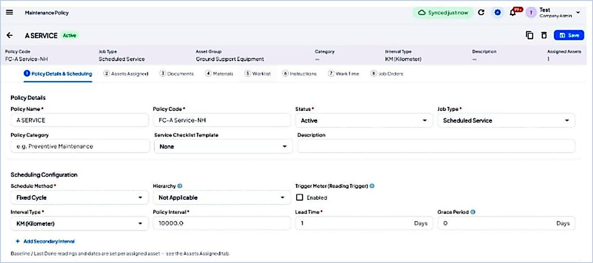
Save the Policy & Assign Assets
Attach the policy to assets with a baseline reading and date.
- After completing Policy Details & Scheduling, click Save.
- Open the Assets Assigned section.
- Click Assign Asset on the right side.
- Select the required Asset Group.
- Select the asset that must follow this maintenance policy.
- Enter the Baseline Reading.
- Enter the Baseline Date.
- Click OK / confirm and then Assign.
- Verify that the asset appears in the Assigned Assets list with its baseline, current reading, next due and job status.
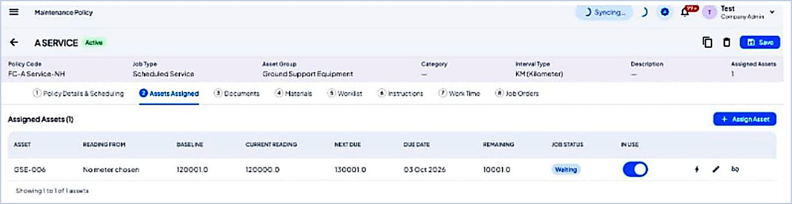
The Eight Scheduling Configurations
Three independent choices combine into eight practical policy set-ups.
The Maintenance Policy design supports eight practical combinations of Schedule Method, Hierarchy and Trigger Meter. Each configuration page shows the policy form and the Assets Assigned list for that set-up.
| Type | Schedule Method | Hierarchy | Trigger Meter | Where to find it |
|---|---|---|---|---|
| 1 | Fixed Cycle | No | Disabled | Fixed Cycle Types 1–4 |
| 2 | Fixed Cycle | Yes | Disabled | Fixed Cycle Types 1–4 |
| 3 | Fixed Cycle | No | Enabled | Fixed Cycle Types 1–4 |
| 4 | Fixed Cycle | Yes | Enabled | Fixed Cycle Types 1–4 |
| 5 | Variable Cycle | No | Disabled | Variable Cycle Types 5–8 |
| 6 | Variable Cycle | Yes | Disabled | Variable Cycle Types 5–8 |
| 7 | Variable Cycle | No | Enabled | Variable Cycle Types 5–8 |
| 8 | Variable Cycle | Yes | Enabled | Variable Cycle Types 5–8 |
Fixed Cycle Configurations — Types 1 to 4
Due points stay anchored to the planned baseline.
State advances at Job generation, from the planned due point.
Type 1 — Fixed Cycle + No Hierarchy + Trigger Disabled
Use a fixed maintenance interval without hierarchy and without meter-trigger behaviour. The policy follows the configured fixed cycle.
Type 2 — Fixed Cycle + Hierarchy Enabled + Trigger Disabled
Use a fixed cycle where hierarchy is required. Configure the applicable hierarchy level. Meter reading trigger remains disabled.
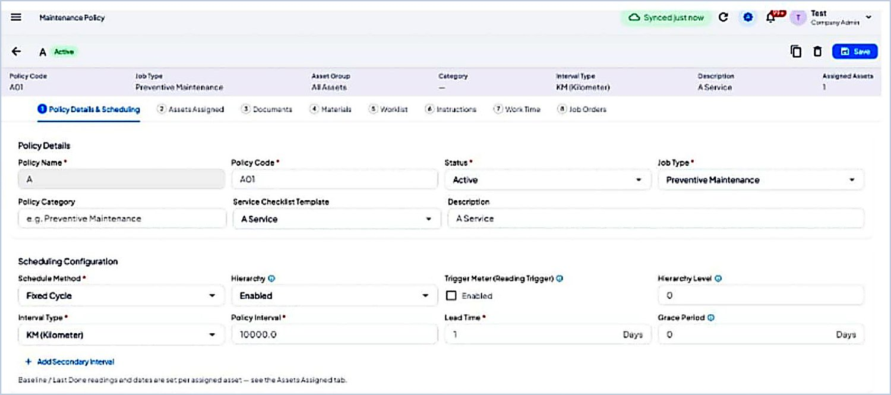
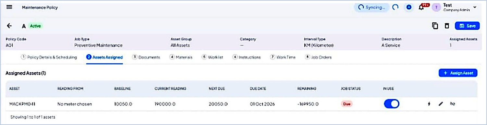
Type 3 — Fixed Cycle + No Hierarchy + Trigger Enabled
Use a fixed cycle and allow meter readings to drive the maintenance calculation. Hierarchy is not used.
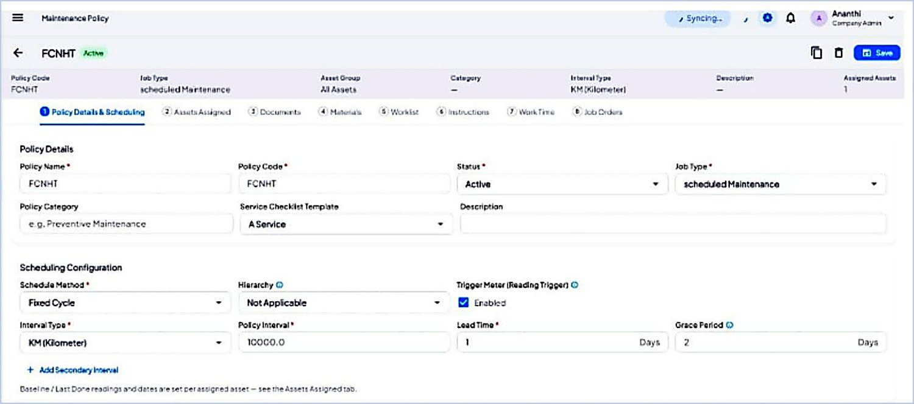
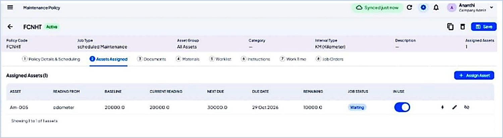
Type 4 — Fixed Cycle + Hierarchy Enabled + Trigger Enabled
Use a fixed cycle with hierarchy and meter-trigger behaviour enabled. Configure the hierarchy level and record readings against the assigned asset.
Variable Cycle Configurations — Types 5 to 8
Due points move from the actual last-done completion.
State advances at Job completion, from the actual completion reading / date.
Type 5 — Variable Cycle + No Hierarchy + Trigger Disabled
Use a variable cycle without hierarchy and without meter-trigger behaviour.
Type 6 — Variable Cycle + Hierarchy Enabled + Trigger Disabled
Use a variable cycle with hierarchy, while leaving the meter trigger disabled. Configure the required hierarchy level.
Type 7 — Variable Cycle + No Hierarchy + Trigger Enabled
Use a variable cycle without hierarchy and allow meter readings to trigger the maintenance calculation.
Type 8 — Variable Cycle + Hierarchy Enabled + Trigger Enabled
Use a variable cycle with hierarchy and meter-trigger behaviour. Configure the hierarchy level and maintain current meter readings for accurate due calculations.
Create a Meter
For meter-driven maintenance the asset needs a meter, created from its Readings section.
- Open the required asset and select View.
- Open the Readings section.
- Click Add Readings / Create Meter as provided by the screen.
- The asset is normally carried into the meter form. Select / confirm the Meter Type.
- Enter the Meter Name and Unit.
- Set Average Using Last N Readings — the number of readings the system averages for usage analysis and forecasts.
- Enter the Last End Reading or applicable starting value.
- Click Create Meter.
Record Readings
Keep readings current so due calculations stay accurate.
- Open the created meter to view the Timeline / Graph.
- Click Record Reading.
- Enter Date & Time and the current reading.
- Continue recording readings as the asset operates, according to actual readings.
The Eight Maintenance Policy Tabs
Complete the sections in order, then save.
A Maintenance Policy is organised into eight sections along the top of the screen. Complete Policy Details first, then configure assigned assets, documents, materials, worklist, instructions, work time and job orders.
Tabs 1 and 2
| Tab | Purpose |
|---|---|
| 1. Policy Details & Scheduling | Policy Code, Job Type, Policy Category, Service, Description, Scheduling Method, Service Cycle, Variation, Trigger, Interval Type and related values. |
| 2. Assets Assigned | Select the assets the policy applies to. Confirm the correct asset or asset group before continuing. The assigned-asset count appears in the policy summary at the top of the screen. |
Documents & Materials Tabs
Attach the service manual and list the parts required.
Documents
Attach the manual or service document related to the policy. The uploaded document shows its file name and link.
- Click Replace to upload or replace the service / manual document.
- Confirm the correct file name and attached document link.
- Use the preview / open icon to view the document and the bin icon to delete it.
Materials
Records the parts or materials required to complete the service.
- Enter the material Name.
- Enter the Part No. for traceability.
- Enter the required Qty.
- Use Add Material for additional parts; use the delete icon to remove an item.
Worklist & Instructions Tabs
The checklist and the tasks technicians follow on the Job Order.
Worklist
Contains the checklist items that must be completed during the service. Each item appears as a numbered task and can be marked Required.
- Add checklist items in the required order.
- Use clear, specific wording for each item.
- Confirm which items are Required.
Instructions
Tasks that technicians or workers should follow when the policy creates a Job Order.
- Add practical tasks workers should follow.
- Keep each task short and action-oriented.
- Use Add Task when more instructions are needed.
Work Time & Job Orders Tabs
Planned labour, and the Job Orders the policy has generated.
Work Time
Defines planned labour for the policy. For each role, specify Workers Required and Planned Hours. The summary shows planned hours per role on every Job Order.
- Select the required Role.
- Enter Workers Required and Planned Hours.
- Use Add Role to include additional labour roles.
Job Orders
Shows Job Orders generated from the policy. Filter by status — All, Open, InProgress, Completed, SignedOff, Cancelled, Forecast — and by date range.
- Use the status tabs to review Job Orders.
- Check Job Order No., Status, Priority, Scheduled date and Triggered By.
- Use Date range to review a specific period.
The Engine in One View
The five building blocks and the order in which the engine thinks.
- Calculate Next Due for every configured interval.
- Evaluate Primary and optional Secondary intervals independently.
- Use OR logic: the first satisfied interval makes the shared cycle eligible.
- Apply Meter Trigger rules to a reading interval when enabled; the calendar interval remains independently active.
- If hierarchy is enabled, rank only policies that are independently eligible.
- Check for an existing active Job Order for the shared cycle.
- Generate one Job Order and update state according to Fixed Cycle or Variable Cycle rules.
Four Scheduling Methods & Schedule State
Two schedule bases, with or without hierarchy — and the fields that hold the state.
| Method | Schedule anchor | Hierarchy | State moves |
|---|---|---|---|
| Fixed Cycle | Planned Baseline | No | At Job generation, from planned due point |
| Variable Cycle | Actual Last Done | No | At Job completion, from actual completion |
| Fixed Cycle Hierarchy | Planned Baseline | Yes | Generated + covered lower baselines advance at generation |
| Variable Cycle Hierarchy | Actual Last Done | Yes | Generated + covered lower Last Done values update at completion |
Essential Schedule State
| Field | Training meaning |
|---|---|
| Baseline Date / Reading | Driving planned anchor for Fixed Cycle methods. |
| Last Done Date / Reading | Actual completed-work anchor for Variable Cycle methods. |
| Next Due Date / Reading | Calculated due point for the Asset + Policy pair. |
| Current Reading / Reading Date | Latest valid accumulated matching reading from the Reading Module. |
| Schedule Cycle ID | Shared due-cycle key used to prevent duplicate generation. |
| Status | Examples: Waiting, Due Soon, Due, Job Raised, Suppressed, Reading Required. |
Dual-Interval Scheduling — OR / Whichever Occurs First
One required Primary Interval and one optional Secondary Interval.
A policy has one required Primary Interval and may have one optional Secondary Interval. Each interval is evaluated independently, but both represent the same maintenance requirement and share one Schedule Cycle ID.
| Example | Reading side | Calendar side | Result |
|---|---|---|---|
| Configuration | 10,000 KM | 3 Months | 10,000 KM OR 3 Months |
| Fixed baseline | 100,000 KM | 01-Jan-2026 | – |
| Next Due | 110,000 KM | 01-Apr-2026 | – |
| Forecast trigger | 108,000 KM | 30-Mar-2026 | Whichever trigger is reached first |
If 108,000 KM is reached on 20-Mar-2026, the reading side generates the one Job Order for the shared cycle. The later calendar trigger must not create a duplicate. If the calendar trigger is reached first, it generates the one Job Order instead.
Reading & Calendar Rules
Which readings count, and what happens when none exist.
- Use the latest valid Accumulated Reading for the matching Asset and Frequency Type.
- A KM policy evaluates KM readings only; an Engine Hours reading must not trigger it.
- Use accumulated readings so meter replacement, rollover or reset does not restart the maintenance cycle.
- If no valid matching reading exists, do not generate a usage-based Job Order; set status to Reading Required.
- Calendar schedules use system date / time and calendar arithmetic appropriate to the configured frequency.
Forecast Mode vs Meter Trigger
Same policy, two ways of deciding when the reading side fires.
| Condition | Meter Trigger OFF | Meter Trigger ON |
|---|---|---|
| Reading interval | Current Reading >= Forecast Trigger Reading | New valid Reading >= Next Due Reading |
| Average usage | Used to calculate meter forecast | Ignored for meter generation |
| Calendar interval | Current Date >= Trigger Date | Current Date >= Trigger Date |
| Overall dual policy | Reading condition OR Calendar condition | Actual meter condition OR Calendar condition |
Forecast formulas
ForecastLeadUsage = AverageDailyUsage x LeadTimeDays
TriggerReading = NextDueReading - ForecastLeadUsage
Meter Trigger event rule
When Meter Trigger is ON for a reading interval, generation is event-driven. On a new valid matching reading, calculate Next Due and continue only when NewAccumulatedReading >= NextDueReading. Forecast usage is not used for that meter condition.
Fixed Cycle
Future due points stay anchored to planned cycle values.
Fixed Cycle keeps future due points anchored to planned cycle values. Actual completion is recorded for history but does not move the schedule.
NextDueDate = BaselineDate + PolicyInterval
| Step | Example |
|---|---|
| Start | Baseline 10,000 KM; interval 10,000 KM; Next Due 20,000 KM |
| Generation | Job Order generated for the 20,000 KM cycle |
| State update | Baseline advances to planned 20,000 KM; Next Due becomes 30,000 KM |
| Actual completion | Work completes at 21,350 KM |
| Outcome | Next Due stays 30,000 KM, not 31,350 KM |
Variable Cycle
The next cycle moves from the actual completion point.
Variable Cycle scheduling moves the next maintenance cycle from the actual completion point of the previous completed Job Order.
NextDueDate = LastDoneDate + PolicyInterval
| Step | Example |
|---|---|
| Start | Last Done 11,000 KM; interval 10,000 KM; Next Due 21,000 KM |
| Generation | Job generated; Last Done remains 11,000 KM while work is open |
| Completion | Job completes at 21,500 KM |
| State update | Last Done becomes 21,500 KM |
| Outcome | New Next Due becomes 31,500 KM |
Hierarchy — Rules, Window & State
A higher eligible service covers the lower services — but only after eligibility is proven.
Hierarchy groups related service policies so a higher eligible service can cover lower services. The critical order is: calculate eligibility first, then rank. A higher policy that has not reached its own trigger must not be pulled forward.
| Level | Policy | Interval |
|---|---|---|
| 1 | A Service | 10,000 KM |
| 2 | B Service | 30,000 KM |
| 3 | C Service | 60,000 KM |
| 4 | D Service | 120,000 KM |
Expected Fixed Cycle sequence: 10K A, 20K A, 30K B, 40K A, 50K A, 60K C, 70K A, 80K A, 90K B, 100K A, 110K A, 120K D.
Hierarchy window
Example: (10,000 / 120,000) x 100 = 8.33%
HierarchyWindowReading = 10,000 KM
Suppression comparison uses Difference < HierarchyWindow, not <=
The strict boundary preserves the 110K A Service before the 120K D Service because the difference is exactly 10,000 KM, and 10,000 < 10,000 is false.
Fixed vs Variable Cycle hierarchy state
| Situation | Fixed Cycle Hierarchy | Variable Cycle Hierarchy |
|---|---|---|
| Higher service generated | Advance generated + covered lower planned baselines | Keep Last Done unchanged; mark covered lower policies suppressed |
| Higher service completed | Record actual completion only | Reset generated + covered lower Last Done to actual completion point |
| Higher service cancelled | Keep / recreate same cycle; do not advance twice | Release suppression and re-evaluate; Last Done remains unchanged |
Hierarchy — Service Matching Rule
Four services only form a Hierarchy when three details match.
When four services are created under a Maintenance Policy and the Service Schedule Method is set to Hierarchy, the services must be identified as belonging to the same policy and the same type of work. Three details are checked across all four services: Policy Name, Policy Code and Job Type.
| Service | Policy Name | Policy Code | Job Type |
|---|---|---|---|
| Service A | Same | Same | Same |
| Service B | Same | Same | Same |
| Service C | Same | Same | Same |
| Service D | Same | Same | Same |
Each service still keeps its own level and interval within the Hierarchy (A lowest, D highest).
| Situation | Result |
|---|---|
| All four services match on all three details | Accepted — Hierarchy works |
| Policy Name differs on any service | Not accepted — Hierarchy does not work |
| Policy Code differs on any service | Not accepted — Hierarchy does not work |
| Job Type differs on any service | Not accepted — Hierarchy does not work |
| More than one detail differs | Not accepted — Hierarchy does not work |
How to set up a valid Hierarchy
- Create the first service and note its Policy Name, Policy Code and Job Type.
- Create the remaining three services using exactly the same three details.
- Set the Service Schedule Method to Hierarchy.
- Give each service its own level and interval (A lowest, D highest).
- Save. If any detail differs, the Hierarchy is rejected — correct the mismatch and save again.
If HierarchyValid is false: reject the Hierarchy — no covering or suppression of lower services is applied.
Test checklist
| # | Test | Expected result |
|---|---|---|
| 1 | Create Services A–D with identical Policy Name, Policy Code and Job Type; set method to Hierarchy | Accepted and works |
| 2 | Change the Policy Name on one service only | Not accepted |
| 3 | Change the Policy Code on one service only | Not accepted |
| 4 | Change the Job Type on one service only | Not accepted |
| 5 | Change all three details on one service | Not accepted |
| 6 | Correct the mismatch so all four services match again | Accepted and works |
Initialising an Asset on a Policy
What happens when an asset is first placed under a policy.
- Check whether valid service history exists for the policy.
- If history exists, derive Baseline or Last Done according to the scheduling method.
- If no history exists, an administrator establishes the initial scheduling anchor.
- Calculate Next Due.
- Read current meter / date state.
- Set schedule status and activate the assignment.
Job Raised → Job Order
How a due service becomes completed, signed-off work.
How the service becomes due
Once the policy, asset baseline and meter readings are configured, Fidentra OS uses the configured interval and current reading to calculate the maintenance position. When the configured service threshold is reached, the system can show the maintenance status and raise the corresponding job according to the policy configuration.
- A, B, C and D Service — each is raised when its configured service interval is reached.
- The exact interval values must match the approved maintenance schedule.
Working the Job Order
- Open Job Order and locate the maintenance job.
- Review the asset, service and due information.
- Add the required Instructions.
- Add the required Work List items.
- Add Materials where required.
- Enter Work Time.
- Attach Documents, Work Logs / Audit Logs and Certification where applicable.
- Perform the maintenance work.
- Complete the required checklist / work information.
- Complete and Sign Off the Job Order / service.
End-to-end example
Job Order Lifecycle & Duplicate Prevention
One shared cycle produces one Job Order.
| Event | Fixed Cycle | Variable Cycle |
|---|---|---|
| Policy eligible | Generate if duplicate / cycle checks pass | Generate if duplicate / cycle checks pass |
| Job generated | Advance Baseline to planned due point | Do not change Last Done |
| Job open | Block same-cycle duplicate | Block same-cycle duplicate |
| Job completed | Record actual completion only | Update Last Done from actual completion |
| Job cancelled | Keep / recreate same cycle; no double advance | Release suppression and re-evaluate; Last Done unchanged |
Both intervals in a dual-interval policy resolve to the same Schedule Cycle ID. Once the first interval generates the Job Order, the second condition may later be recorded as reached but must not generate another Job Order for that cycle.
Edge Cases & Required Behaviour
Conditions to train and test.
| Condition | Required behaviour |
|---|---|
| No matching valid reading | No meter-based Job Order; status = Reading Required |
| Reading jumps over due point | Use >= so the due cycle still generates |
| Wrong frequency type | Ignore for that policy |
| Meter replaced / reset | Use accumulated reading; do not restart from raw meter |
| Policy inactive / asset not in use | Do not evaluate or generate |
| Existing Job for due cycle | Do not create duplicate |
| Variable Cycle Job remains open | Do not update Last Done; block same-cycle duplicate |
| Higher hierarchy policy not independently eligible | Exclude it; never pull it forward |
| Hierarchy difference equals window | Do not suppress because the comparison is strict < |
Eight Scheduling Concepts — Concept Map
Three independent dimensions, one scheduling engine.
The eight concepts are combinations of three independent dimensions: Schedule Basis (Variable Cycle or Fixed Cycle), Hierarchy (off or on) and Meter Trigger (off or on). They are combinations of one scheduling engine, not eight separate engines.
| Concept | Schedule Basis | Hierarchy | Suppression | Meter Trigger | Screen Type |
|---|---|---|---|---|---|
| 1 | Variable Cycle | No | None | OFF | Type 5 |
| 2 | Fixed Cycle | No | None | OFF | Type 1 |
| 3 | Variable Cycle | Yes | Suppression | OFF | Type 6 |
| 4 | Fixed Cycle | Yes | Suppression | OFF | Type 2 |
| 5 | Variable Cycle | No | None | ON | Type 7 |
| 6 | Fixed Cycle | No | None | ON | Type 3 |
| 7 | Variable Cycle | Yes | Suppression | ON | Type 8 |
| 8 | Fixed Cycle | Yes | Suppression | ON | Type 4 |
Rules that apply across all eight concepts
- Primary Interval is required and Secondary Interval is optional. When both exist, they are evaluated independently using OR / whichever occurs first.
- Both intervals belong to one shared Schedule Cycle ID; after one side generates the Job Order, the other side must not create a duplicate for the same cycle.
- When Meter Trigger is ON, it changes only the reading-side generation condition. A configured calendar interval remains independently active.
- Hierarchy is applied only after independent eligibility is established. It must not pull a higher service forward before that service reaches its own trigger.
- Fixed Cycle advances schedule state at Job generation from planned due points. Variable Cycle advances schedule state at Job completion from actual completion values.
Concepts 1 to 4 — Meter Trigger OFF
Forecast generation: the reading side can fire before the actual due point.
Concept 1 — Variable + No Hierarchy + Meter Trigger OFF
Variable Cycle schedule, individual policy, forecast generation, no suppression.
- Next Due = Last Done + Interval.
- With Meter Trigger OFF, a reading interval can become eligible at the forecast trigger: Next Due – (Average Daily Usage x Lead Time).
- Generating the Job Order does not advance Last Done. Last Done changes only when the Job Order is completed.
- Example: Last Done 10,000 KM + 10,000 KM interval = 20,000 KM Next Due. At 1,000 KM/day with a 2-day lead, forecast trigger = 18,000 KM. If completed at 21,500 KM, new Next Due = 31,500 KM.
Concept 2 — Fixed + No Hierarchy + Meter Trigger OFF
Fixed Cycle schedule, individual policy, forecast generation, no suppression.
- Next Due = Baseline + Interval.
- With Meter Trigger OFF, forecast logic may generate before the actual due point.
- At Job generation, the Baseline advances from the planned due point; actual completion does not move the future Fixed Cycle.
- Example: Baseline 10,000 KM, interval 10,000 KM, Next Due 20,000 KM; forecast trigger may be 18,000 KM. Once generated, Baseline becomes 20,000 KM and Next Due becomes 30,000 KM, even if completion occurs at 21,500 KM.
Concept 3 — Variable + Hierarchy + Meter Trigger OFF
Variable Cycle with hierarchy, forecast generation, and suppression of covered lower services.
- Each policy first calculates its own Next Due and must become independently eligible.
- Only independently eligible policies enter hierarchy selection; the highest eligible level wins. A higher service must never be pulled forward just because a lower service is eligible.
- At Job generation, Last Done remains unchanged for the generated policy and covered lower policies.
- On completion, the generated and covered lower policies reset their Last Done anchors to the actual completion reading / date. Example: if B covers A and completes at 92,300 KM, A and B Last Done become 92,300 KM.
Concept 4 — Fixed + Hierarchy + Meter Trigger OFF
Fixed Cycle with hierarchy, forecast generation, and suppression of covered lower services.
- Each hierarchy policy is evaluated independently before ranking.
- At a common due point, the highest independently eligible service generates and covered lower services are suppressed.
- Generated and covered lower baselines advance from their planned due points at Job generation.
- Example: A 10K, B 30K, C 60K, D 120K. At 60K, C can generate and suppress A/B while D remains excluded if it is not independently eligible. Actual completion at 62,500 KM does not shift the fixed 60K anchor.
Concepts 5 to 8 — Meter Trigger ON
Actual-reading generation: the reading side fires on a new valid reading at or past Next Due.
Concept 5 — Variable + No Hierarchy + Meter Trigger ON
Variable Cycle schedule, individual policy, actual-reading Meter Trigger, no suppression.
- Meter-side forecasting is disabled. Average usage is ignored for meter generation.
- On a new valid matching reading, the condition is Current Reading >= Next Due Reading.
- There is no hierarchy, so the policy is evaluated individually.
- Last Done still changes only at Job completion. Example: Next Due 30,000 KM; 29,900 KM = no Job, 30,000 KM = eligible. If completed at 31,200 KM, the next cycle is calculated from 31,200 KM.
Concept 6 — Fixed + No Hierarchy + Meter Trigger ON
Fixed Cycle schedule, individual policy, actual-reading Meter Trigger, no suppression.
- Meter generation waits for a new valid matching reading that is >= Next Due.
- No average-usage forecast is used for the reading condition.
- At Job generation, the Fixed Cycle Baseline advances from the planned due point.
- Example: Baseline 20,000 KM and interval 10,000 KM gives Next Due 30,000 KM. At a valid 30,000 KM reading, generate the Job and advance Baseline to 30,000 KM; next due becomes 40,000 KM.
Concept 7 — Variable + Hierarchy + Meter Trigger ON
Variable Cycle with hierarchy, actual-reading Meter Trigger, and suppression.
- Each hierarchy policy checks its own actual meter condition: new valid reading >= its own Next Due.
- Only independently eligible policies become candidates; the highest eligible service wins and covered lower services are suppressed.
- Generation does not update Last Done.
- When the winning Job Order is completed, its actual completion reading / date resets the generated and covered lower policies. Higher policies that were not covered remain unchanged.
Concept 8 — Fixed + Hierarchy + Meter Trigger ON
Fixed Cycle with hierarchy, actual-reading Meter Trigger, and suppression.
- Each policy independently compares the new valid reading with its own Next Due.
- The highest independently eligible service generates; covered lower services are suppressed.
- At generation, generated and covered lower baselines advance from their planned due points.
- Example: A/B/C are due around 60K and D is due at 120K. At 60,250 KM, C is the highest eligible policy, so C generates, A/B are suppressed, and D is untouched.
Scenario Workshop
Practical scenarios for trainers and learners.
Use these scenarios during training. Ask the learner to state: (a) whether the policy is eligible, (b) which policy / interval wins, (c) whether a Job Order is generated, and (d) which state values change.
| Scenario | Expected result |
|---|---|
| Fixed: 20K cycle completes at 21.35K | Next due remains 30K. |
| Variable Cycle: Last Done 11K, completes at 21.5K | Last Done = 21.5K; next due = 31.5K. |
| Meter Trigger ON; next due 30K; reading 29.9K | No Job. |
| Meter Trigger ON; next due 30K; reading 30.0K | Job eligible. |
| Fixed hierarchy at 60K: A/B/C due; D not due | Generate C; suppress A/B; D untouched. |
| Dual interval 10K KM OR 3 Months; date reaches trigger first | Generate one Job from calendar side even if KM is below trigger. |
| Meter Trigger ON; KM below due; calendar trigger reached | Generate from calendar side. |
| Fixed dual interval generated by KM side | Advance both Baseline Reading and Baseline Date to planned due points. |
| Completion of dual interval at 111.2K on 24-Mar | Set both Last Done anchors to actual completion values. |
| Hierarchy: A meets an interval; higher B meets neither | Only A is independently eligible; do not pull B forward. |
Knowledge Check & Answer Key
Ten questions, then the model answers.
Questions
- What is the difference between a Schedule Policy and an Asset-Policy schedule state?
- With Primary 10,000 KM and Secondary 3 Months, what logic joins the intervals?
- When Meter Trigger is ON, is the calendar condition disabled?
- When does a Fixed Cycle baseline advance?
- When does Variable Cycle Last Done advance?
- Can a higher hierarchy service participate before its own trigger is reached?
- Why must both dual intervals share one Schedule Cycle ID?
- What happens when no valid matching accumulated reading exists?
- What comparison operator is used at the hierarchy window boundary?
- What are the five questions the engine must answer in order?
Answer Key
| # | Answer |
|---|---|
| 1 | The policy defines reusable rules; the Asset-Policy record stores the current state for that specific asset assignment. |
| 2 | OR / whichever occurs first. The first satisfied interval makes the shared cycle eligible. |
| 3 | No. Meter Trigger changes only the reading-side generation condition; the calendar side remains independently active. |
| 4 | At Job generation, from the planned due point. |
| 5 | At Job completion, from the actual completion reading / date. |
| 6 | No. Each hierarchy policy must first be independently eligible. |
| 7 | To ensure the second interval cannot generate a duplicate Job Order for the same maintenance requirement. |
| 8 | Do not generate the usage-based Job Order; set Reading Required. |
| 9 | Strict less-than: Difference < HierarchyWindow. |
| 10 | Next due points; whether Primary OR Secondary reached its generation condition; Meter Trigger / calendar interaction; hierarchy winner among independently eligible policies; whether the shared cycle already generated a Job Order. |
Maintenance Policy — User Checklist
What a trainee should be able to confirm unaided.
Validation checklist
| No. | Training Requirement | Status |
|---|---|---|
| 1 | Policy name and code are correct and unique. | ☐ Not Checked |
| 2 | Status is set correctly. | ☐ Not Checked |
| 3 | Job Type, Policy Category and Service Checklist Template are correct. | ☐ Not Checked |
| 4 | Schedule Method is correct: Fixed Cycle or Variable Cycle. | ☐ Not Checked |
| 5 | Hierarchy is correctly enabled or not applicable. | ☐ Not Checked |
| 6 | Trigger Meter checkbox is correctly enabled / disabled. | ☐ Not Checked |
| 7 | Interval Type and Policy Interval are correct. | ☐ Not Checked |
| 8 | Lead Time and Grace Period are correct. | ☐ Not Checked |
| 9 | Asset Group and Asset are correctly assigned. | ☐ Not Checked |
| 10 | Baseline Reading and Baseline Date are correct. | ☐ Not Checked |
| 11 | Meter is created with the correct type, name and unit. | ☐ Not Checked |
| 12 | Readings are recorded with the correct date / time and value. | ☐ Not Checked |
| 13 | Next Due / Remaining / Job Status values are reviewed. | ☐ Not Checked |
| 14 | Raised maintenance job appears in Job Order. | ☐ Not Checked |
| 15 | Instructions, Work List, Materials, Work Time, Documents / Logs / Certification are completed as required. | ☐ Not Checked |
| 16 | Job Order is completed and signed off. | ☐ Not Checked |
Final review of the eight tabs
| No. | Training Requirement | Status |
|---|---|---|
| 1 | Policy details and scheduling values are correct. | ☐ Not Checked |
| 2 | The correct assets are assigned. | ☐ Not Checked |
| 3 | The required manual / service document is attached. | ☐ Not Checked |
| 4 | All required materials have Name, Part No. and Qty. | ☐ Not Checked |
| 5 | The worklist contains the required service checks. | ☐ Not Checked |
| 6 | Instructions are clear and actionable. | ☐ Not Checked |
| 7 | Roles, worker requirements and planned hours are correct. | ☐ Not Checked |
| 8 | Generated Job Orders and scheduled dates are reviewed. | ☐ Not Checked |
Trainer Quick Reference
One page for the trainer.
| Question | Rule |
|---|---|
| How is Next Due calculated? | Fixed = Baseline + Interval; Variable Cycle = Last Done + Interval. |
| When is a dual policy eligible? | When Primary OR Secondary reaches its generation condition first. |
| What changes with Meter Trigger ON? | Reading generation waits for a new valid reading >= Next Due; calendar remains active. |
| How is hierarchy applied? | Only after independent eligibility; highest eligible policy wins under suppression rules. |
| How are duplicates stopped? | Shared Schedule Cycle ID + active / outstanding Job check. |
| When does state move? | Fixed at generation from planned due; Variable Cycle at completion from actual values. |
Files — Purpose & Overview
A central place to create, upload, organise, search, view, manage, delete and restore files.
| Module | Files |
| Main Screen | Files (left menu → Files) |
| Primary Purpose | A central location to create, upload, organise, search, view, manage, delete and restore files. |
| Covers | Purpose, overview, navigation, file management, search & filters, folder management, trash & restore, and the end-to-end workflow. |
Purpose and Scope
The Files module provides a central location to create, upload, organise, search, view, manage, delete and restore files. It supports common file categories such as Documents, Images, Spreadsheets, PDFs and Other file types.
Module Overview
The Files main page provides access to the user's file library and folder structure. The main areas are:
- All Files — displays all files available to the user.
- My Folder — displays folders created or available to the user.
- Trash — contains deleted files/folders that can be restored.
- Folder — opens a selected folder and displays its contents.
- File Types — allows files to be organised or viewed by type, such as Document, Image, Spreadsheet, PDF and Other.
What is on the main screen
Elements visible in the screenshot above:
| Element | What it shows |
|---|---|
| Left panel | All Files, My Folders (labelled “My Folders” on screen) and Trash. Under FILE TYPES, each type is listed with its file count, e.g. Images (2). |
| Search box | “Search files and folders ...” |
| Type filter | Drop-down that limits the list to one file type (“Images” is selected in this example). |
| Sort menu | Drop-down for the sort order (“Name (A-Z)” in this example). |
| View toggle | Two icons beside the sort menu: a list view and a grid view. |
| Folders / Files tabs | Switch between the folders and the files in the current area, each with a count (Folders 5, Files 2 in this example). |
| New Folder | Button at the top right. See New Folder. |
| Folder rows | Each folder has a three-dot menu on the right (example folders: SC, test, module, QA_Temp_Folder, Test). |
Files — Search, Filter & Sorting
The controls on the main page that help you find a file quickly.
The Files main page includes a search bar, file-type filter, sorting controls and a file list. These controls help users locate files quickly.
| Control | Options / Use | Purpose |
|---|---|---|
| Search | Search by file name | Find a specific file quickly. |
| Type filter | Document, Image, Spreadsheet, PDF, Others, Everything | Show only the required file category. |
| Sort order | A to Z, Z to A | Sort names alphabetically. |
| Sort by date | Newest, Oldest | Show recently or previously modified files. |
| Sort by size | Largest | Identify large files quickly. |
| File list | Name, Type, Size, Modified On, Actions | Review file details and available actions. |
| More option | Context menu | Open additional actions for the selected item. |
The file list
When you open a folder that contains files, the list shows one row per file with five columns: Name, Type, Size, Modified On and Actions (the three-dot menu). The footer confirms how many files are shown.
Example from the screenshot in Working Inside a Folder
| Name | Type | Size | Modified On |
|---|---|---|---|
| A_Service_Preventive_Maintenance.docx | DOCX | 7.0 KB | 18 Sep 2026 12:32 |
Footer text: “Showing 1 to 1 of 1 files”. See Working Inside a Folder.
Files — File Types, All Files & My Folder
How files are grouped by type, and the difference between All Files and My Folder.
File Type Organisation
Uploaded files are presented according to their file type. Typical categories include:
| File Type | Examples |
|---|---|
| Document | DOC / DOCX and similar text documents |
| Image | JPG, JPEG, PNG and similar image files |
| Spreadsheet | XLS / XLSX and similar spreadsheet files |
| PDF documents | |
| Others | File formats not covered by the main categories |
On screen, the FILE TYPES section of the left panel lists the types that currently contain files, each with a count — for example Documents (1) and Images (2).
My Folder and All Files
All Files is used to view the complete file collection available to the user. My Folder is used to navigate through the user's folder structure and view folders.
Files — Create / Upload Files
Add new content to the Files module.
Use the Create option on the Files module main page to add new content. Users can create or upload supported file content such as images, documents, spreadsheets and PDFs.
- Open the Files module.
- Click Create.
- Select the required create/upload option.
- Choose the file to upload or complete the required file details.
- Confirm the action.
- The file is stored in the appropriate file area/type and becomes available from the Files list.
In this screenshot, the buttons at the top right of the folder screen are New Folder, Camera and Upload. The uploaded file (a .docx in this example) appears in the file list, and its type is added to the FILE TYPES panel on the left.
Files — New Folder
Create a folder to keep related files together.
The New Folder option allows users to create a folder for organising files.
- Click New Folder.
- Enter the Folder Name.
- Click Create.
- The new folder appears in the folder/file area.
- Use the three-dot menu beside the folder to access Edit Folder when available.
The dialog is titled New Folder. It has one field, Folder name, and two buttons: Cancel and Create.
Files — Working Inside a Folder
Open a folder and use the same tools on its contents.
Click a folder to open it. The folder name is displayed at the top of the page. The same search, type-filter and sorting controls are available inside the folder.
- Search by file name within the folder.
- Filter by Document, Image, Spreadsheet, PDF, Others or Everything.
- Sort by A to Z, Z to A, Newest, Oldest or Largest where supported.
- Create another folder using New Folder.
- Upload files directly into the current folder.
- Open a file to view or manage it.
What is on the folder screen
| Element | What it shows |
|---|---|
| Folder name | Shown as the page title (“test” in this example). |
| Breadcrumb | “Home › test” — click Home to go back up. |
| New Folder / Camera / Upload | Buttons at the top right for adding folders and files to the current folder. |
| Folders / Files tabs | Folders 0 and Files 1 in this example. |
| File list | Name, Type, Size, Modified On and Actions columns. |
Files — Delete & Restore
Deleted items go to Trash first, and can be restored from there.
When a file or folder is deleted, it is moved to Trash rather than being permanently removed immediately.
- Select the required file or folder.
- Use the available Delete action from the item's action or more-options menu.
- The deleted item is moved to Trash.
- Open Trash to locate the deleted item.
- Use Restore to return the item to its available file/folder location.
The Trash screen lists each deleted item. In this example the deleted folder Test is shown with a blue Restore link and a red bin icon on the right.
Files — End-to-End Workflow
The full journey from opening Files to deleting and restoring an item.
The ABC flow: A – Access Files → B – Create/Upload → C – Organise → D – Search/Filter → E – Manage → F – Delete/Restore. Click any step to open its page.
Files — Quick Reference
Find the right control for each goal.
| User Goal | Use |
|---|---|
| See every available file | All Files |
| See folders | My Folder |
| Find a file by name | Search bar |
| Show only PDFs | Type filter → PDF |
| Show recent files | Sort → Newest |
| Show oldest files | Sort → Oldest |
| Sort names alphabetically | A to Z / Z to A |
| Create a folder | New Folder |
| Edit a folder | Three dots → Edit Folder |
| Recover a deleted item | Trash → Restore |
Files — Training Checklist & Notes
What a trainee should be able to do, and how to treat the guide.
User Training Checklist
| No. | Training Requirement | Status |
|---|---|---|
| 1 | Open the Files module and identify All Files, My Folder and Trash. | ☐ Not Checked |
| 2 | Create a new folder and edit the folder name/details. | ☐ Not Checked |
| 3 | Upload an image, document, spreadsheet and PDF. | ☐ Not Checked |
| 4 | Search for a file by name. | ☐ Not Checked |
| 5 | Apply the file-type filter. | ☐ Not Checked |
| 6 | Apply A to Z, Z to A, Newest, Oldest and Largest sorting where available. | ☐ Not Checked |
| 7 | Open a folder and create a sub-folder. | ☐ Not Checked |
| 8 | Open and manage a file using the available actions. | ☐ Not Checked |
| 9 | Delete a test file and confirm that it appears in Trash. | ☐ Not Checked |
| 10 | Restore the deleted file from Trash. | ☐ Not Checked |
Training Notes
Files Module – Training Guide | Internal User Guide
Load Record — Overview & Workflow
Plan, command, wait and track every trip.
Module Purpose
The Load Record module is used to create and manage trip/load information. From a single workflow you can filter existing records, manage supporting Customers and Locations, create a new load, capture vehicle/trailer and axle-mass information, upload documents, certify the record, review the details, and save the final load for future tracking and management.
| Item | Detail |
|---|---|
| Audience | Operations users, dispatch / load planners, administrators, and anyone responsible for maintaining load information. |
| Navigation path | Main Menu → Load Record → Load Records |
| Stages to create a load | 4 — Load Details & Vehicle, Axle & Mass, Documents, Review & Confirm |
End-to-End Workflow
The eleven steps below cover a load from opening the module to managing it after it is saved. Click any step to jump to its page.
Load Records Main Page
Where existing loads are found, filtered and managed.
The Load Records page lists every created load and gives access to the actions required to create and manage them.
Filters and Search
| Filter / Option | Purpose |
|---|---|
| Date | Filter load records by date. |
| Location | Filter records using configured locations. |
| Vehicle | Filter records using the relevant vehicle / asset. |
| Status | Filter by Planned, Dispatch, In Transit, Complete or Cancelled. |
| Search | Search by Load ID, name or asset name. |
| More Filters | Narrow the results by Customer, Priority and Load Type. |
Page Actions
| Action | Description |
|---|---|
| Export | Exports the displayed Load Record information (Excel / PDF). |
| Show Menu (three dots) | Provides additional management actions. |
| Manage Customer | Opens the Customer configuration page — create, edit, delete and search customers. |
| Manage Location | Opens the Location configuration page — create, edit, delete and search locations, including loading and unloading points. |
| Create New Load Record | Starts the new Load Record creation workflow. |
| View icon (eye) | Opens the load record details. |
Stage 1 — Load Details & Vehicle Configuration
The basic trip information, then the truck and trailer combination.
Select Create New Load Record to open the Load creation panel. The workflow is completed through four stages:
1.1 Load Details
Enter or select the basic load information required for the trip.
- Date
- Load Type
- Driver assignment
- Operational information / checks
- Customer
- Loading Point
- Unloading Point
1.2 Vehicle & Trailer Configuration
Select the required truck, prime mover, trailer or other configured assets from the available dropdowns. Where a Road Train combination has been configured in Settings, that combination can be selected as a predefined configuration instead of picking each unit.
After selection, the chosen vehicle / trailer configuration can be previewed with the related asset image.
Stage 2 — Axle & Mass Capture
Axle masses, bucket distribution and the load summary.
Stage 3 — Documents, Terms & Certification
Attach evidence, accept the terms and sign the record.
- Upload the relevant documents and photographs required for the load.
- Review and agree to the Terms & Conditions.
- Use the Sign option to provide the required signature.
- Select Save to store the signature.
- Complete the certification step so the record is marked Certified.
- Select Submit and Next to proceed to Review & Confirm.
Stage 4 — Review & Confirm
The last check before the Load Record is created.
Review all information entered during the previous stages. Confirm the load details, configuration, mass information, documents, terms, signature and certification before saving the load.
Saved Load Record — Available Actions
What you can do with a load once it exists.
| Action | Purpose |
|---|---|
| Sync | Synchronise the saved load record where applicable. |
| Offline Sync | Use the available offline-sync option where supported. |
| Print the saved load record. | |
| Edit | Modify permitted load information. |
| Status Change | Update the load status — Planned, Dispatch, In Transit, Complete or Cancelled — as permitted. |
| Three Dots | Provides additional actions such as Edit, Delete and other load-related actions. |
Load Record List — Ongoing Management
How saved loads are tracked day to day.
All created load records are listed on the main Load Records page. Users can open a record to view its details and use the available actions.
Load information may also be generated or stored as part of related operational workflows, including loads associated with approved Logbook processes — see Create a Load & Asset Storage in the Log Book module.
Load Record — Quick Reference
Find the right control for each goal.
| Task | Steps |
|---|---|
| Find a load | Use Date, Location, Vehicle, Status, Search or More Filters. |
| Create a load | Create New Load Record → complete all four stages → Save Load. |
| Manage customers | Show Menu → Manage Customer. |
| Manage locations | Show Menu → Manage Location. |
| Track status | Use the available load status values and the Load Records list. |
| Review a saved load | Open the record → review details → Sync / Print / Edit or other permitted actions. |
Load Record — User Checklist
What a trainee should be able to do unaided.
| No. | Training Requirement | Status |
|---|---|---|
| 1 | Confirm Date, Load Type, Driver, Customer, Loading Point and Unloading Point. | ☐ Not Checked |
| 2 | Select the correct vehicle / trailer or configured Road Train combination. | ☐ Not Checked |
| 3 | Verify the Load Panel and Axle & Mass Capture information. | ☐ Not Checked |
| 4 | Check payload, gross load, legal payload and utilisation values. | ☐ Not Checked |
| 5 | Upload the required documents and photos. | ☐ Not Checked |
| 6 | Agree to the Terms & Conditions and complete signature / certification. | ☐ Not Checked |
| 7 | Review all information before selecting Save Load. | ☐ Not Checked |
| 8 | After saving, use the available Sync, Print, Edit, Status and additional actions. | ☐ Not Checked |
Load Record Module – Training Guide | Internal User Guide
Job Order — User Guide
A topic-based guide to creating, assigning, tracking, completing and signing off maintenance work.
Find a Job Order topic
Overall Workflow
The module follows a simple lifecycle: create the Job Order, assign it, edit the work setup, track work, update status, then sign off completed work. Maintenance Policy and Forecast are linked where applicable.
Filtering and Searching Job Orders
Use the controls above the list to locate the work you need.
- From the main menu, click Job Order.
- The Job Order page opens and shows the list of Job Orders.
- Use one or more filters to narrow the list.
| Control | How to use it |
|---|---|
| Search box | Type a Job Order number or Job Order name to locate a specific record. |
| All | Shows every Job Order when no specific filter is applied. |
| Asset filter | Select a specific asset, or leave the asset choice at the all-types option to see Job Orders for every asset. |
| Priority filter | Filter by Low, Medium, High or Critical priority. |
Creating a New Job Order
Create the work record, assign responsibility, set the schedule and add To-Do tasks.
1. Basic Details and Priority
| Field | What it means / how to use it |
|---|---|
| Job Details | Enter the basic description and details of the work to be done. |
| Asset | Select the vehicle/equipment this Job Order applies to. Assets created in the system are available from the dropdown. |
| Priority | Choose Low, Medium, High or Critical based on urgency. |
2. Assignment and Scheduling
| Field | What it means / how to use it |
|---|---|
| Assign To | Select the employee responsible for the work. Employee accounts such as drivers, mechanics and admins appear in the dropdown. Confirm the selection so the assignee appears under Assigned To. |
| Scheduled Date | Set the date on which the work is planned to be carried out. |
| Progress | Starts at 0% when the Job Order is created and is updated as work progresses. |
3. Add a To-Do Task
- Type the task as a sentence in the Add Task box.
- Click the + icon to add it to the To-Do list.
- Repeat for additional tasks.
4. Save
- Check the details, priority, assignee, scheduled date and tasks.
- Click Create Job Order.
- If the Job Order is assigned, it appears in the Assigned list.
Viewing, Editing and Cancelling
Open an existing Job Order and manage its setup.
Row actions
- Eye icon — opens the Job Order directly.
- Three-dot menu — provides View Details, Edit Job Order and Cancel Job Order.
Editing a Job Order
Click Edit to update a Job Order after it is created. The edit screen also provides sections that are not part of the initial creation form.
| Field | How to use it |
|---|---|
| Service Checklist | Select an applicable checklist from the defaults already configured in Settings. |
| Parts | Select required parts, tick the checkbox and use Add Part to add them to the Job Order. |
After saving, instructions are visible under Instructions, services under Work List, and parts under Materials.
Cancelling
Select Cancel Job Order from the three-dot menu when the work is no longer required. The Job Order moves to the Cancelled status.
Job Order Detail Tabs
Each tab separates a different type of work information and activity.
| Tab | What is stored / shown here |
|---|---|
| Details | Core information entered when the Job Order was created, including asset, priority, assignment and schedule. |
| Instructions | Instructions added for the Job Order. |
| Work List | Services added to the job, including work derived from the Service Checklist. |
| Materials | Parts added to the Job Order. |
| Work Time | Recorded start/end work time and total hours worked. |
| Documents | Attached files, including documents uploaded from Work List or Materials. |
| Work Log | Work updates posted for the Job Order. |
| Audit Log | Automatic history of actions taken on the Job Order. |
Tracking Work on a Job Order
Record instructions, work performed, materials, time, documents and history while the job is active.
Instructions
Use Add Task under To Do Task and the + icon to add questions or instructions. The added items are saved under Instructions when the Job Order is reviewed.
Work List
Work List contains the services that have been added to the Job Order. Use this area to work through the required service/checklist items.
Materials
To add materials, open Job Order → Edit → Parts, select the required parts, enter the details and save the changes. The parts are then shown under Materials.
Work Time
Use Work Time to record how long work took on the Job Order. Enter the Start Work Time; the system records the work period based on the captured entries.
Documents
Use Documents to attach relevant files. Documents added while working in Work List or Materials are also stored here.
Work Log
Use Work Log to post updates about the work being carried out.
Audit Log
Creation, edits, status changes and other actions are automatically recorded in Audit Log, providing the activity history of the Job Order.
Changing the Status of a Job Order
Use Change Status to move the Job Order through its lifecycle.
| Status | When to use it |
|---|---|
| In Progress | Select while work on the Job Order is underway. |
| Complete | Select once all work on the Job Order is finished. |
| Cancel | Select when the Job Order is no longer proceeding. |
After a status is selected, the Job Order automatically appears in the corresponding list such as In Progress, Completed or Cancelled.
Maintenance Policy and Forecast Link
How service pricing flows into the Job Order and then into Forecast.
- When a service is priced under Maintenance Policy, it is stored against the relevant Job Order.
- When that service on the Job Order is marked Complete, it is automatically moved into Forecast.
Signing Off a Completed Job Order
Finalise a Job Order after all work has been completed.
- Go to Settings > Company Profile.
- Scroll to the final section, Job Order Sign Off.
- Click the comment area and tick the checkbox used for the sign-off configuration.
- Return to the completed Job Order and click Sign Off.
- Confirm the sign-off and provide the signature where prompted.
- After successful sign-off, the Job Order record is finalised.
Quick Reference Summary
The Job Order process from opening the module to final sign-off.
| Step | Action | Navigation / key control |
|---|---|---|
| 1 | Navigate | Main Menu > Job Order. |
| 2 | Filter / Search | Use the search box, Asset filter and Priority filter. |
| 3 | Create | Enter Details, Priority, Assign To, Scheduled Date and To-Do Task; then Create Job Order. |
| 4 | Manage | Use the eye icon or three-dot menu to View Details, Edit or Cancel. |
| 5 | Edit | Add Service Checklist and Parts as required. |
| 6 | Track | Use Work List, Materials, Work Time, Documents, Work Log and Audit Log. |
| 7 | Update status | Change Status > In Progress, Complete or Cancel. |
| 8 | Sign off | After completion, use the configured Job Order Sign Off process. |
Job Order at a glance
Job Request — Overview
Raise a request for work on an asset, and track the decision.
The Job Request module is used to raise a request for work to be carried out on an asset (equipment or machine). Once a request is submitted it is reviewed and either approved — which automatically creates a Job Order — or declined.
The Four Tabs
A '+' Request Job Order button sits in the bottom-right corner of every tab and opens the new request form.
Columns in Every Tab
| Column | Description |
|---|---|
| Request | The title / name of the Job Request. |
| Status | Open, Approved or Declined. |
| Date | Date the request was created or last updated. |
| Actions | A View option that opens the full details of that request. |
Accessing the Job Request Module
How to get to the module and what you see when you arrive.
- Open the application and go to the Main Menu.
- Tap or click Job Request from the menu list.
- The Job Request screen opens, showing four tabs at the top: All, Open, Approved, Declined.
- A '+' (plus) icon is available in the bottom-right corner, labelled Request Job Order — this is used to raise a new request.
Creating a New Job Request
From the plus button to a submitted request.
- From the Job Request screen, click the '+' icon (Request Job Order) in the bottom-right corner.
- The New Job Request form opens.
- Select the Request Type — for example, Asset.
- Choose the specific Asset from the dropdown list.
- Enter a Title for the request.
- Enter a Description explaining the issue or work needed.
- Select the Priority: Low, Medium or High.
- Optionally use Attach Document to upload existing photos or files, or Take Photo to capture a new photo directly.
- Click Submit Request at the bottom of the form.
- The screen returns to the main Job Request page. The new request is now visible in the All tab and the Open tab.
Workflow — Creating & Submitting
Fields & Validation
What each field expects, and what stops a submission.
| Field | Type | Notes |
|---|---|---|
| Request Type | Dropdown | For example, Asset. |
| Asset | Dropdown | Select the exact asset the request is for. |
| Title | Text | Short name for the request. |
| Description | Text (multi-line) | Explain the issue or work required. |
| Priority | Dropdown | Low / Medium / High. |
| Attach Document / Photo | Optional upload | Attach existing files or take a new photo. |
Reviewing, Approving & Declining
The decision point — and the moment a Job Order is born.
- Go to the Open tab — this lists every request awaiting a decision.
- On the request row, click the three-dot icon (⋮) labelled More Action.
- Select View to open the full request details.
- Review the Asset, Priority and Description shown.
- Choose Approve if the work should go ahead, or Reject if it should not.
- If approved, the status changes to Approved, the request moves to the Approved tab, and a Job Order is created automatically.
- If declined, the status changes to Declined and the request moves to the Declined tab.
Workflow — Approval Decision
From Approved Request to Job Order
Where the request stops and the actual work begins.
- Open the Approved tab. Each row shows the Request name, Status (Approved) and Date.
- Click Actions on the request row, then click View.
- The detail screen shows the Asset, Priority, Description and other details of the request.
- Click View Job Order at the bottom of the screen.
- The Job Order page opens, showing Details, Instructions, Worklist, Material, Work Time, Document and Work Log.
- From here you can edit details, add a Work Log entry, and make changes as the job progresses.
- When the work is finished, mark the Job Order Complete and Sign Off — or mark it Cancel if the job is not going ahead.
Job Order Page — What Each Section Means
| Section | Purpose |
|---|---|
| Details | Core information carried over from the approved request — asset, priority, description. |
| Instructions | Step-by-step instructions for the technician performing the work. |
| Worklist | Checklist of individual tasks to be completed as part of the job. |
| Material | Parts and materials used or required for the job. |
| Work Time | Time logged or spent performing the work. |
| Document | Supporting files or photos attached to the job order. |
| Work Log | A running log of updates — use Add Log to record progress notes. |
Workflow — Approved Request to Completion
Complete End-to-End Navigation Flow
Every step from raising the request to final sign-off, on one screen.
This combines the raising, decision and job-order stages into a single big-picture map. Click any step to open its page.
Quick Reference — Tabs & Statuses
Which actions are available from where.
| Tab | Status shown | Can move to | Action available |
|---|---|---|---|
| All | Any | — | View |
| Open | Open | Approved or Declined | More Action → View → Approve / Decline |
| Approved | Approved | Job Order created | Actions → View → View Job Order |
| Declined | Declined | — | View |
Key Points to Remember
- A new request always lands in both the All and Open tabs first.
- Only requests in the Open tab can be Approved or Declined.
- Approving a request automatically generates a Job Order — this is the link between Job Request and Job Order.
- The Job Order page is where the actual work is tracked, edited and finally marked Complete (with Sign Off) or cancelled.
- Attach Document / Take Photo can be used both when raising the original request and while working on the Job Order.
Job Request Module – Training Guide | Internal User Guide
Settings — Purpose & Overview
The central configuration area for company details, operational rules, compliance requirements, checklists, vehicle configuration, fatigue-management schemes, user roles and system preferences.
| Module | Settings |
| Main Screen | Settings (left menu → Setting) |
| Primary Purpose | Configure company, operational and compliance data used throughout the application. |
| Covers | Company Profile, Customer, Product Types, Departments, Contractors, Locations, Checklist Templates, Vehicle Configuration, Road Train Combinations, Fitness for Work Questions, Fatigue Rules, Roles, Sync Status, Appearance, Terms & Conditions, Storage, About. |
Main Settings Screen
Settings Groups & Subgroups
Company Profile
Stores and manages the transport company's core business, contact, compliance and operational information, used throughout the application.
Purpose
Company Profile is used to store and manage the transport company’s core business, contact, compliance and operational information. This information is used throughout the Fidentra application.
Navigation
Login → Settings → Company Profile → Identity → Enter Details → Save
Step-by-Step
Open Settings from the main navigation menu.
Select Company Profile.
Open the Identity section.
Select Upload Logo and upload the company logo.
Enter the Legal Entity Name.
Enter the Trading Name.
Enter the ABN.
Select the appropriate Industry.
Review the entered information.
Select Save.
Structure
SETTINGS │ └── Company Profile │ ├── Identity — Upload Logo, Legal Entity Name, Trading Name, ABN, Industry ├── Contact — Primary Phone, Primary Email, Primary Website ├── Registration Address — Street Address, Address Line 2, Suburb, State, Postcode ├── Compliance — Fatigue Management, NHVAS Accreditation No., NHVAS Modules, Record Retention Years, Insurance Policy No., Insurance Expiry, Accreditation Expiry ├── Operations — Time Zone, Distance Management, Week Started ├── Logbook — Driver Certification Declaration ├── Logbook Flags — Email Recipients ├── Fault Report — Email Recipients ├── Load Bridge — Email Recipients ├── Job Types — Job Order, Completion Declaration, Labour Sign-off └── Account — Storage, Allowance, Company ID
Customer
Create, manage and track the clients of the transport company; linked to Job Orders, Invoicing and Load assignments.
Purpose
The Customer section is used to create, manage and track the clients of the transport company. Customer records are used to link details in Job Orders, Invoicing and Load assignments.
Navigation
Settings → Customer → Add Customer → Enter Customer Details → Save
Step-by-Step
Open Settings from the main navigation menu.
Select Customer.
Select Add Customer from the top-right corner.
Enter the Customer Name (business / legal name).
Enter the Contact Person name.
Enter the Phone Number.
Enter the Email Address.
Enter the Billing Address: Street Address, Address Line 2, Suburb, State, Postcode.
Enter the ABN (if applicable).
Select the Customer Type, if configured (e.g. Regular, Contract, One-Off).
Ensure the Active option is switched ON if the customer should be available for use.
Review the entered information.
Select Save.
Structure
Editing: Open Customer → select record → Edit → change details → Save.
Deleting: Open the customer’s three-dot menu → Delete → confirm. Confirm the customer is not linked to any active Job Orders, Invoices or ongoing business processes first.
Searching: Use the Search field at the top of the page.
Pagination: Large customer lists are divided into pages.
3. Product Types
Maintain the product-type reference list used throughout operational workflows.
Purpose. Product Types maintain the reusable list of commodities/materials that are hauled or handled — this is what a Log Book, Load Record or dispatch transaction records as the cargo, not a spare-part or consumable. The supplied Product Types screen provides a searchable list with row-level edit and delete actions.
Navigation
Settings → Product Types
Main screen
| Item | How it is used |
|---|---|
| Search | Search product types by name. |
| Product Type Name | The list displays the configured commodity/material name. |
| Edit | Use the row edit action to change an existing product type. |
| Delete | Use the row delete action to remove a product type that is no longer required. |
| Pagination / count | The supplied screen shows a paged list and indicates how many product types are displayed. |
Typical bulk-haulage product types
4. Departments
Create organisational departments used when assigning users and assets.
Purpose. Departments provide the organisational grouping used when assigning users/employees and assets to business areas.
Navigation and workflow
Confirmed Create fields
| Field / action | Training use |
|---|---|
| Name | Enter the department name. |
| Cancel | Close the New Department dialog without creating a record. |
| Create | Create the department using the entered name. |
Department examples supplied in the demo data
| # | Department |
|---|---|
| 1 | Linehaul Operations |
| 2 | Metro & Regional Operations |
| 3 | Bulk Haulage Operations |
| 4 | Heavy Haulage |
| 5 | Fleet & Maintenance |
| 6 | Workshop |
| 7 | Yard Operations |
| 8 | Safety & Compliance |
| 9 | Driver Operations |
| 10 | Scheduling & Dispatch |
| 11 | Administration |
| 12 | Finance & Accounts |
| 13 | Human Resources |
| 14 | Management |
5. Contractors
Maintain external contractor and service-provider names.
Purpose. Contractors maintain the contractor names used by the application when a record needs to identify an external contractor or service provider.
Navigation and workflow
Confirmed Create fields
| Field / action | Training use |
|---|---|
| Name | Enter the contractor name. |
| Cancel | Close the New Contractor dialog without creating a record. |
| Create | Create the contractor using the entered name. |
Example contractor names supplied
6. Locations
Maintain depots, loading/unloading points, terminals and operational sites.
Purpose. Locations maintain operational sites used for loading, unloading, depots and customer/site destinations. The supplied list screen shows Name, Type and Address, with search, type filtering, edit and delete actions.
Navigation
Settings → Locations
Main screen and fields
| Field / control | Training use |
|---|---|
| Search locations by name | Filter the list by location name. |
| Type | Filter the list by location type. The supplied data uses Loading Point, Unloading Point, and Loading & Unloading. |
| Name | Identifies the depot, terminal, customer site, yard or operational location. |
| Address | Stores/displays the location address. |
| Edit | Open the row edit action to update the location. |
| Delete | Remove a location that is no longer required. |
| Pagination / count | The list indicates how many locations are being shown. |
Location types and examples from the supplied data
| Name | Type | Address |
|---|---|---|
| Fidentra Welshpool Main Depot | Loading & Unloading | 18 Meridian Drive, Welshpool WA 6106 |
| Kewdale Freight Terminal | Loading & Unloading | 34 Logistics Drive, Kewdale WA 6105 |
| Fremantle Port Freight Facility | Loading & Unloading | 12 Harbour Link Road, Fremantle WA 6160 |
| Pilbara Mining Supplies - Karratha | Unloading Point | 28 Industrial Avenue, Karratha WA 6714 |
| Wheatbelt Grain Depot - Northam | Loading Point | 16 Grain Terminal Road, Northam WA 6401 |
| Southern Cross Logistics Depot | Loading & Unloading | 41 Freight Way, Forrestfield WA 6058 |
| Geraldton Regional Freight Depot | Loading & Unloading | 26 Industrial Road, Geraldton WA 6530 |
| Albany Freight Facility | Loading & Unloading | 14 Transport Avenue, Albany WA 6330 |
Operational use
- Select configured Locations in operational workflows such as Log Book and Load Record where loading/unloading or site information is required.
- Use the Type filter to narrow the list to the appropriate operational purpose.
- Keep names and addresses consistent so the same site is not created more than once under slightly different names.
Checklist Templates
Create reusable checklists for vehicle and operational inspections such as Pre-Start, Post-Trip and Service checks.
Purpose
Checklist Templates are used to create reusable checklists for vehicle and operational inspections such as Pre-Start, Post-Trip and Service checks.
Navigation
Settings → Checklist Templates → New Template → Enter Template Details → Add Checklist Items → Select Item Type → Activate Template → Save
Step-by-Step
Open Settings.
Select Checklist Templates.
Select New Template from the top-right corner.
Enter the Template Name.
Select the required Category: Pre-Start, Post-Trip, Service.
Enter the first Checklist Item / Question.
Select the appropriate Item Type: Pass / Fail, Text, Number, Photo.
To add additional questions, select Add Items.
Ensure the Active option is switched ON if the template should be available for use.
Select Save.
Structure
Editing: Open the template → Edit → modify name, category or items → remove unwanted items with the Remove icon → Save.
Deleting an item: Select the Remove/Delete icon beside the item.
Deleting a template: Three-dot menu → Delete Template → confirm.
Searching: Use the Search field. Filtering: Use All Types / Pre-Start / Post-Trip / Service. Pagination: large lists are divided into pages.
Vehicle Configuration
Define vehicle/asset types and their associated axle groups and vehicle images.
Navigation Workflow
Purpose
Vehicle Configuration is used to define vehicle/asset types and their associated axle groups and vehicle images. Examples: Prime Mover, Rigid Truck, Semi-Trailer, Car Dolly, Dog Trailer, UTE, Excavator, Forklift, Loader.
Navigation
Settings → Vehicle Configuration → Add Vehicle Type → Vehicle / Asset Group → Add Axle Group → Axle Group Name + Image → Save
Step-by-Step
Open Settings → Vehicle Configuration.
Select Add Vehicle Type.
Enter the vehicle/asset group name (e.g. Prime Mover).
Select Save — the vehicle type now appears on the Vehicle Configuration page.
Adding an Axle Group: select the vehicle configuration (e.g. Prime Mover).
Select Add Axle Group.
Enter the Axle Group Name.
Upload the corresponding vehicle/axle-group image.
Select Save.
Structure
Prime Mover │ ├── Axle Group 1 │ └── Vehicle Image ├── Axle Group 2 │ └── Vehicle Image └── Axle Group 3 └── Vehicle Image
Editing an Axle Group: open the configuration → select the image/configuration → three-dot menu → Edit → change name/image → Save.
Renaming: three-dot menu → Rename → enter new name → Save.
Deleting: delete a configuration or image only when no longer required by the business.
Road Train Combinations
Define approved vehicle combinations using trucks, dollies and trailers configured in the system.
Purpose
Road Train Combinations are used to define approved vehicle combinations using trucks, dollies and trailers configured in the system.
Navigation
Settings → Road Train Combinations → Add Combination → Combination Name → Add Trailer → Select Assets → Select Combination Image → Save
Step-by-Step
Open Settings → Road Train Combinations.
Select Add Combination.
Enter the Combination Name.
Select Add Trailer.
Available configured assets are displayed: Truck, Prime Mover, Dolly, Trailer, Dog Trailer, Semi-Trailer.
Select the assets required for the combination.
Select the appropriate Combination Image.
Select Save.
Fitness for Work Questions
Capture driver fitness information before work activities.
Purpose
Fitness for Work Questions are used to capture driver fitness information before work activities.
Navigation
Settings → Fitness for Work Questions → Add Question → Enter Question → Define Answer → Save
Step-by-Step
Open Fitness for Work Questions.
Select Add Question.
Enter the required question.
Configure the available response, such as Yes / No.
Select Save — the question becomes available in the relevant driver workflow.
Fatigue Rules
Configured fatigue-management requirements used to monitor work, rest and break requirements and support fatigue breach notifications.
Purpose
Fatigue Rules define the company’s configured fatigue-management requirements.
Navigation
Settings → Fatigue Rules → New Scheme (+) → Enter Fatigue Rules → Configure Work / Rest Requirements → Configure Cycle Rules → Save
Step-by-Step
Open Settings → Fatigue Rules.
Select New Scheme (+).
Enter the required fatigue-rule details.
Configure the relevant work, break and rest requirements.
Review the configured values.
Select Save.
11.1 Breaks from Driving
Defines the required break arrangement during driving/work periods.
Driving / Work Period → Required Break → Break Duration → Continue Work
Example: a company may require a 20-minute break after a defined work period, subject to its applicable fatigue-management rules. If the requirement is not met, the system can identify a fatigue-related breach and trigger the configured notification/email workflow.
11.2 Work and Rest Cycle
Defines the relationship between minimum continuous rest, maximum time between qualifying rest periods, work periods and required rest periods.
Work → Required Rest → Work → Required Rest → Continue Cycle
11.3 72-Hour Rest Requirement
| Non-Work Hours Required | 127 (example) |
| Required Long Rest | 3 (example) |
| Assessment Period | 72 hours |
| Minimum Qualifying Non-Work Event | 30 (example) |
| Qualifying Long Rest Duration | 4.14 (example) |
Training note: these values should be entered per the company’s approved fatigue scheme and not changed without authorisation.
11.4 14-Day Cycle
| Period | 14 days |
| Work Time Limit | 168 hours |
| Required 24-Hour Rest | 2 |
| Qualifying 24-Hour Rest | 1,440 minutes |
| Advisory Threshold | 150 / 156 / 162 |
14-Day Period → Monitor Work Time → Check Required Rest → Check Advisory Threshold → Identify Potential Breach
11.5 28-Day Cycle
| Assessment Period | 28 days |
| Work Time Limit per 14-Day Sub-Window | 144 hours |
| Qualifying 24-Hour Rest | 1,440 minutes |
28-Day Assessment → 14-Day Sub-Window → Check Work Time → Check Qualifying Rest → Continue Monitoring
11.6 Shift Change Rest
| Consecutive Shift Days Threshold | 5 |
| Required Rest Between Shift Changes | 24 hours |
| Assessment Logic | Any Pattern Change / Different Shift Type Only |
Any Pattern Change — assessed whenever the worker’s shift pattern changes. Different Shift Type Only — assessed only when the worker changes to a different shift type.
Current Shift → Shift Pattern Changes → Check Consecutive Days → Check Required Rest → Apply Fatigue Rule → Continue / Breach
Roles
Control user access and permissions within the Fidentra application.
Roles Workflow
Purpose
Roles are used to control user access and permissions within the Fidentra application.
Navigation
Settings → Roles → View Existing Roles → Add New Role / Edit Role / Delete Role
Step-by-Step
Open Settings.
Select Roles.
Select Add New Role.
Enter the required role details and permissions.
Review the selected permissions.
Select Save.
Sync Status
Monitor whether application data has successfully synchronised: pending, failed, conflicts, or not yet synchronised.
Purpose
Sync Status allows users to monitor whether application data has successfully synchronised.
Navigation
Settings → Sync Status → Review Synchronisation (Pending / Failed / Conflict / Completed) → Sync Now or Sync Everything
Step-by-Step
Open Settings.
Select Sync Status.
Review the displayed synchronisation records.
Check whether any records have a status such as Pending, Failed, Conflict.
Select the relevant record to review its status/details.
For a specific pending item, select it then Sync Now and wait for completion.
Use Sync Everything when multiple records need to be synchronised.
Structure
| Pending | Synchronisation is waiting to be processed |
| Failed | Synchronisation was not completed successfully |
| Conflict | The system has identified conflicting data |
| Completed | Synchronisation was completed successfully |
Appearance
Select the visual theme used by the application.
Purpose
The Appearance section allows users to select the visual theme used by the application.
Navigation
Settings → Appearance → Select Theme (System Default / Light Mode / Dark Mode)
Step-by-Step
Open Settings.
Select Appearance.
Select one of: System Default (follows the device setting), Light Mode, or Dark Mode.
Terms & Conditions
Access the terms applicable to the Fidentra application.
Purpose
The Terms and Conditions section provides access to the terms applicable to the Fidentra application.
Navigation
Settings → Terms & Conditions → View Terms → Read Application Terms
Step-by-Step
Open Settings.
Select Terms & Conditions.
Review the displayed terms.
Scroll through the document to read the complete content.
Storage
Contains Timesheets, Logbook and Pending Sync Items data areas.
Purpose
The Storage area groups Timesheets, Logbook and Pending Sync Items.
Structure
Status: Pending. Field-level details for Storage (Timesheets, Logbook, Pending Sync Items) have not yet been provided. This section will be completed once configuration details are confirmed.
About
Displays App Name and Version.
Purpose
The About area displays the application name and version.
Structure
Status: Pending. Field-level details for About (App Name, Version) have not yet been provided. This section will be completed once configuration details are confirmed.
Setting — Groups & Subgroups Reference
Every Setting section (Main Group), its subsections (Subgroup), and the specific fields or data captured in each.
| Main Group | Subgroup | Fields / Data |
|---|---|---|
| 1. Company Profile | Identity | Upload Logo, Legal Entity Name, Trading Name, ABN, Industry |
| Contact | Primary Phone, Primary Email, Primary Website | |
| Registration Address | Street Address, Address Line 2, Suburb, State, Postcode | |
| Compliance | Fatigue Management, NHVAS Accreditation No., NHVAS Modules, Record Retention Years, Insurance Policy No., Insurance Expiry, Accreditation Expiry | |
| Operations | Time Zone, Distance Management, Week Started | |
| Logbook | Driver Certification Declaration | |
| Logbook Flags | Email Recipients | |
| Fault Report | Email Recipients | |
| Load Bridge | Email Recipients | |
| Job Types | Job Order, Completion Declaration, Labour Sign-off | |
| Account | Storage, Allowance, Company ID | |
| 2. Customer | Customer Details | Customer Name, Contact Person, Phone Number, Email Address, ABN, Customer Type, Active Status |
| Billing Address | Street Address, Address Line 2, Suburb, State, Postcode | |
| 3–6. Product Types / Departments / Contractors / Locations | Status | Detailed training content added from supplied screens and datasets |
| 7. Checklist Templates | Template Details | Template Name, Category (Pre-Start, Post-Trip, Service), Active Status |
| Checklist Items | Item 1, Item 2, Item 3, Item 4, Add Items (Item 5, Item 6, …) | |
| Item Types | Pass / Fail, Text, Number, Photo | |
| 8. Vehicle Configuration | Vehicle / Asset Types | Prime Mover, Rigid Truck, Semi-Trailer, Car Dolly, Dog Trailer, UTE, Excavator, Forklift, Loader |
| Axle Groups (per Vehicle Type) | Axle Group 1, Axle Group 2, Axle Group 3 — each with an Axle Group Name and Vehicle Image | |
| 9. Road Train Combinations | Combination Details | Combination Name, Combination Image |
| Assets | Truck, Prime Mover, Dolly, Trailer, Dog Trailer, Semi-Trailer | |
| 10. Fitness for Work Questions | Question Setup | Question Text, Response Type (e.g. Yes / No) |
| 11. Fatigue Rules | 11.1 Breaks from Driving | Driving/Work Period, Required Break, Break Duration |
| 11.2 Work and Rest Cycle | Minimum Continuous Rest, Maximum Time Between Qualifying Rest, Work Periods, Required Rest Periods | |
| 11.3 72-Hour Rest Requirement | Non-Work Hours Required, Required Long Rest, Assessment Period, Minimum Qualifying Non-Work Event, Qualifying Long Rest Duration | |
| 11.4 14-Day Cycle | Period, Work Time Limit, Required 24-Hour Rest, Qualifying 24-Hour Rest, Advisory Threshold | |
| 11.5 28-Day Cycle | Assessment Period, Work Time Limit per 14-Day Sub-Window, Qualifying 24-Hour Rest | |
| 11.6 Shift Change Rest | Consecutive Shift Days Threshold, Required Rest Between Shift Changes, Assessment Logic | |
| 12. Roles | Role Management | Add New Role, Edit Role, Delete Role, Permissions |
| 13. Sync Status | Status Guide | Pending, Failed, Conflict, Completed |
| 14. Appearance | Theme | System Default, Light Mode, Dark Mode |
| 15. Terms & Conditions | Terms | View / Read Application Terms |
| 16. Storage | Data Areas | Timesheets, Logbook, Pending Sync Items |
| 17. About | App Info | App Name, Version |
User Management & Roles / Permissions
Step-by-step training for creating and maintaining user accounts, learning assignments, documents, notifications, signing requests, and role-based access.
The User module is the workforce-account management area. It contains two core working areas: User Management for account records and Roles & Permissions for access control.
User Management Workspace
The main working screen for handling user accounts.
The workspace combines the search bar, filters, export, Add User action and categorised user list. Use it as the starting point for day-to-day account administration.
Search, Filter, Export & User Lists
Search Bar
Search users by Name, Email ID or Role.
Filter
| Filter Group | Options |
|---|---|
| All Status | Active / Inactive |
| All Roles | Master Admin / Company Admin / Driver / Mechanic |
Choose the required combination and select Done. Only matching users are displayed.
Export
The Export action exports the currently displayed user list and respects the active search and filter selections.
List Views
Add New User
Complete the account, personal, compliance, shift/pay and fatigue-scheme details.
Clear Add User workflow
“Add User”
Name, Email, Password, Role
Phone, Dept, Position, Trade, Address, Emergency Contact
Number, Expiry, Certificate
Start/End Time, Pay Rate
Default or selected scheme + date
Record is added
Fields required to create a user
| Field | Details / Options |
|---|---|
| Full Name | User's full name. |
| Email ID | Used as login ID. |
| Temporary Password | Set by admin; user changes it on first login. |
| Role | Master Admin / Company Admin / Driver / Mechanic. |
| Phone Number | Contact number. |
| Department | Department the user belongs to. |
| Position | Job position / title. |
| Trade | Trade or specialisation. |
| Address | Residential address. |
| Emergency Contact Name | Name of emergency contact. |
| Emergency Contact Number | Phone number of emergency contact. |
| Date of Joining | Date the user joined. |
| Date of Birth | User's date of birth. |
| Licence Number | Driving / trade licence number. |
| Licence Expiry Date | Expiry date of the licence. |
| Medical Certificate Status | Valid / Expired / Pending Renewal. |
| Medical Certificate Expiry Date | Expiry date of the medical certificate. |
| Shift Start Time | Start of the user's shift. |
| Shift End Time | End of the user's shift. |
| Pay Rate | User's pay rate. |
| Fatigue Scheme | Auto-applies the default scheme from Fatigue Rules, or select a specific scheme together with a Scheme Date. |
Save options
Manage an Existing User
Clear management workflow
“All Users”
Edit fields
- Pencil icon — opens the record in edit mode; select Save to apply changes.
- Three-dot menu — provides View Details and Deactivate/Activate.
- View Details — opens detail tabs with the complete profile, key dates and uploaded records/documents.
- Deactivate/Activate — toggles the user's status between Active and Inactive.
Learning Forms
Assign forms already created in the Learning module.
| Action | Behaviour |
|---|---|
| Assign Form | Displays the list of existing learning forms for selection. |
| Upload | Attaches the selected form to the user. |
| Send Mail | Emails the assigned form to the user. If not selected, the form remains listed under Assigned without email delivery. |
| Course | Used to upload learning documents/courses for the user. |
Courses
View and manage learning course assignments linked to the user.
Documents
Files and images stored against a user record.
Uploaded documents can be viewed or edited from this section. Use the list controls to work with the user-specific records shown in the document area.
Notifications
Control system and email alerts for the selected user.
| Notification Event | Behaviour |
|---|---|
| Maintenance Policy | System event enabled by default; mail checkbox sends an email for this event only. |
| Job Order Form | System event enabled by default; mail checkbox sends an email for this event only. |
| Logbook | System event enabled by default; mail checkbox sends an email for this event only. |
| Fatigue Breach | System event enabled by default; mail checkbox sends an email for this event only. |
| Load Breach | System event enabled by default; mail checkbox sends an email for this event only. |
| Course Completion | System event enabled by default; mail checkbox sends an email for this event only. |
A Refresh action reloads the page and shows the latest data.
Signer / Signing Requests
Send documents for signature and review signing request details.
Create a signing request
- Open the Signer tab for the user.
- Select Send document.
- Confirm the request title.
- Select the signer name and verify the email address.
- Choose an expiration period and reminder frequency.
- Select Review.
Review before sending
The review screen shows the document, recipient, signing order and expiration before the request is sent.
Roles & Permissions
Access by role across the FidentraOS modules.
| Module | Company Admin | Driver | Mechanic |
|---|---|---|---|
| My Place | Full | Full | Full |
| Asset | Full | View Only | View Only |
| Logbook | Full | Full | — |
| Job Order | Full | — | Full |
| Job Request | Full | — | Full |
| Load Record | Full | Full | — |
| Maintenance Policy | Full | — | — |
| Files | Full | — | — |
| Learning | Full | — | — |
| Users | Full | — | — |
| Settings | Full | View Only | View Only |
| Fatigue | Full | Full | Full |
Quick Reference Summary
- User Management covers search/filter, export, Add User, list views, learning forms, courses, documents and notifications.
- Adding a user requires basic, personal, licence/medical, shift/pay details and a fatigue scheme, then Save Offline, Create or Cancel.
- Existing users are maintained through the pencil icon or three-dot menu.
- Signer supports document signing requests with signer, email, expiration and reminder settings.
- Roles & Permissions defines access for Company Admin, Driver and Mechanic.
Getting Support
Where to go when you need a hand.
For assistance with FidentraOS, contact your system administrator or the FidentraOS team.
Learning Module — Overview
Create, distribute and track learning activities for users.
The Learning Module contains two independent content areas: Learning Forms and Learning Document. Both can be sent to users by email, responses can be tracked, and the content can be edited, deleted or refreshed.
Purpose & Create a Learning Form
Learning Forms are short questionnaires made up of one or more questions. Each question has a title and valid URL. Forms are sent by email and responses are tracked automatically.
- Open Learning → Learning Forms.
- Click New Learning Form.
- Enter the Form Title and Description.
- Enter the Question Title and relevant URL.
- Use Add Questions to add more questions as required.
- Click Create Form. The new form becomes available under Learning Forms.
Assign to User & Complete
Assign the form
- Go to the User module.
- Select the required user and open the user's View page.
- Open Learning Form and click Assign Learning Form.
- Select the required form.
- Click Send Mail to send it to the user's email.
Complete the form
- Open the learning form from the received email.
- View the learning content.
- Answer the questions.
- If required, upload the relevant file.
- Complete and submit the form.
Workflow & Tracking
The form workflow moves from creation to user assignment, email delivery, completion and response tracking.
After submission, open the Learning Form page to see the number of questions, sent count, sent date/time and user response information.
Manage an Existing Form
| Option | Use |
|---|---|
| Edit / Edit Form | Reopen the form to change the title, description or questions. |
| Delete | Permanently remove the form when it is no longer needed. |
| Refresh | Reload the Learning Forms list after changes. |
Purpose & Create a Learning Document
Learning Document is used when training material is an actual file—such as an image, PDF or Word file—combined with multiple-choice questions. It also supports a Refresher Interval in days.
- Open Learning → Learning Documents.
- Click New Learning Document.
- Enter Document Title, Description and Refresher Interval.
- Under Instruction Document, choose the required file.
- Add Question 1 and the required choices.
- Use Add Choice for additional choices, up to 7 per question.
- Use Add Question for more questions.
- Click Create Document.
Assign to User & User Response
Assign the document
- Open the User module and select the required user.
- Open the user's details and select Course.
- Click Assigned Document.
- Select the required Learning Document. It is assigned/sent to the user's registered email address.
User response
- Open the email and view the assigned document.
- Review the document and select the appropriate choice for each question.
- Click Submit.
- Open the relevant Learning Form/Document page to view total questions, sent count and submitted responses.
Workflow & Tracking
Manage an Existing Document
| Option | Use |
|---|---|
| Edit | Change title, description, refresher interval, file or questions. |
| Delete | Permanently remove the document. |
| Refresh | Reload the Learning Document list. |
Signer Workflow
The Signer area contains Dashboard, Templates, Requested Document and Auto Log.
- Open Learning → Signer.
- Use Dashboard to review request totals and status.
- Open Templates and select Create Template.
- Enter Template Name, Description and Category such as HR, Legal, Safety or Operations.
- Upload the required PDF and click Next.
- Go to the User module and assign the template to the required user.
- The user receives the request by email, prepares the PDF, adds a signature and submits.
- Use Requested Document to track status and Auto Log to review activity such as Created, Pending, Completed and Cancelled.
Quick Reference Summary
| Feature | Learning Forms | Learning Document |
|---|---|---|
| Content type | Question title + URL link | Uploaded file + multiple-choice questions |
| Answer format | Recipient follows the link and answers | Recipient selects a choice per question |
| Repeats automatically? | No | Yes, based on Refresher Interval (days) |
| Tracking tabs | Responses, Invitations | Responses, Invitations |
| Management options | Edit, Delete, Refresh | Edit, Delete, Refresh |